The English textbook for standard six has been prepared following the guidelines given in the National Curriculum Framework, two thousand five. It has been created to make English language learning both effective and interesting. The aim has been to balance learning the structures and vocabulary of the language with learning their use in everyday life.
The activities have been carefully graded to allow a gradual building of language proficiency. The lessons provide effective individual and collaborative learning in pairs and groups and enable differentiation in multilevel classrooms. Each unit focuses on the themes of natural and social world to stimulate curiosity and imagination, engaging both heart and mind. An ICT Corner has been introduced in each unit for the first time to enhance digital literacy skills.
How to use the book?
Take turns and read this section aloud. Work in pairs and underline the new words. Find out their meanings from the dictionary.
The description of the picture is begins
The picture of Olive Ridley laying eggs is given
The description of the picture is ends
The description of the picture is begins

The picture shows, the two girls Ayisha and Madhi are building sand house in the beach.
The description of the picture is ends
The description of the picture is begins

The picture shows the titles of Do you Know?, Discuss and answer and Glossary.
The description of the picture is ends
The description of the picture is begins

The pictures have the following content.
The illustrations in Picto Grammar will enable understanding of grammar terms in a fun and easy way.
The description of the picture is ends
Digital Grammar Games can be used to reinforce learning and encourage students to learn by doing. Language Check Point can highlight points of usage to avoid the common mistakes.
The description of the picture is begins

The pictures have the following content.
Students can be taken through all the steps of writing with the help of pictures and prompts.
Creative writing can be used to bring out their writing skill.
Students can be encouraged to present or display their writings in the class.
Look at the picture and write a story.
The description of the picture is ends
What do crocodiles eat? Talk about it.
The description of the picture is begins

The pictures have the following contents.
The warm up picture at the beginning of the section can be used to discuss the theme of the poem.
The Focus should be on the enjoyment of the poem through exploring imagery and rhythm.
The supplementary section encourages extensive reading and appreciation of literature.
The description of the picture is ends
The description of the picture is begins

The picture have the following contents.
Connecting to Self is based on the values of each lesson.
Project is meant for working in groups and to develop collaborative learning.
The development of higher order thinking skills is facilitated by the Steps to Success and Think and Answer sections.
The description of the picture is ends
The description of the picture is begins

The picture have the following contents.
Students can be encouraged to extend their reading activity through e-links and Reference Books.
The activities in ICT Corner will ensure acquiring language skills through doing.
The description of the picture is ends
• Download the QR code scanner from the Google PlayStore/ Apple App Store into your smartphone
• Open the QR code scanner application
• Once the scanner button in the application is clicked, camera opens and then brings it closer to the QR code in the text book.
• Once the camera detects the QR code, a url appears in the screen. Click the url and go to the content page.
UNIT |
TOPIC |
PAGE Number. |
MONTH |
Unit Number ,1 Prose |
PAGE Number 85 |
June |
|
Unit Number,1 Poem |
PAGE Number 99 |
June |
|
Unit Number Unit no ,1 Supplementary |
PAGE Number 101 |
June |
|
Unit Number,2 Prose |
PAGE Number 105 |
July |
|
Unit Number,2 Poem |
❖ Trees
|
PAGE Number 120 |
July |
Unit Number,2 Supplementary |
PAGE Number 122 |
July |
|
Unit Number,3 Prose |
PAGE Number 128 |
August |
|
Unit Number,3 Poem |
PAGE Number 142 |
August |
|
Unit Number,3 Supplementary |
PAGE Number 145 |
August |
Memoriter
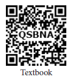
IMAGE
TEXT BOOK QR CODE QSBNA
IMAGE
ASSESSMENT QR CODE NIS8C
The conversation picture of two girls is given
The description of the picture is begins

The picture shows, the two girls Ayisha and Madhi are building sand house in the beach.
The description of the picture is ends
Hi Madhi! I have something interesting to show you on the beach.
Do you? Come, let's go.
IMAGE,
QR CODE 97X2N
The description of the picture is begins
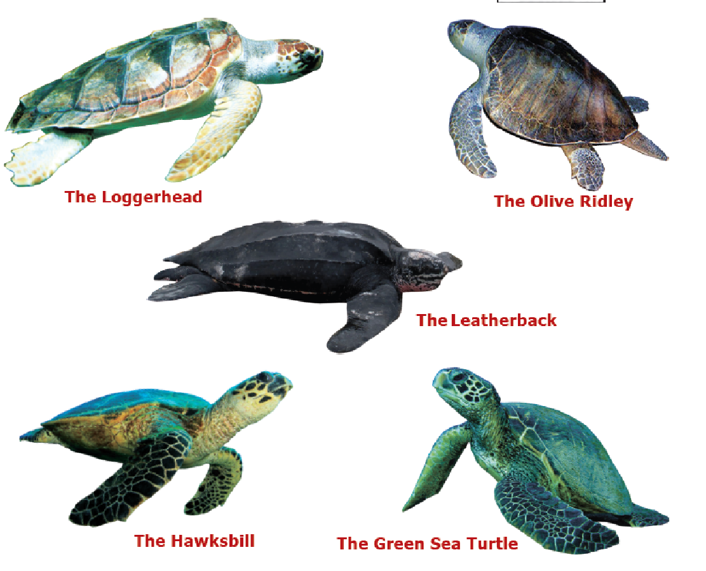
The five attractive kinds of sea turtles found in India’s coastal waters are given in this page
1.The picture of ‘The Loggerhead’, The Olive Ridley, Leatherback, Hawksbill, Green Sea Turtle are given
The description of the picture is ends
1. Have you seen turtles? Where do they live?
2. What do you know about turtles?
3. Why do you think the turtles in the picture have names such as Leatherback and Hawksbill?
The description of the picture is begins

The most familiar sea turtle Olive Ridley’s picture is shown
The description of the picture is ends
Most of us have seen a tortoise in a zoo or a reptile park. However, not many would have seen its marine relative, the sea turtle. This is not surprising, since these reptiles spend almost their entire life in the sea.
There are seven species of marine or sea turtles in the world. Of them, five are found in India's coastal waters: The Olive Ridley, the Hawksbill, the Green Sea Turtle, the Loggerhead and the Leatherback. Compared to most tortoises, sea turtles are huge. Even the smallest species, the Olive Ridley, weighs up to 35 kilograms when fully grown. The largest of them all, the Leatherback, grows to a length of 2.2meter and each could weigh as much as 700 kilograms!
Sea turtles live their life entirely in the oceans. But they still have a connection with land – they must come ashore to lay eggs. Today, four of the sea turtle species mentioned above have become extremely rare in India. The Olive Ridleys, however, are still commonly seen nesting on sandy beaches all along our coasts.
1. Turtles are different from tortoise ,dash,
2. Turtles are sea animals. ,dash,
3. There are seven kinds of sea turtles in the world. ,dash,
4. Sea turtles are very small. ,dash,
5. Turtles come ashore to lay eggs. ,dash,
6. Sea turtles come to rest on land. ,dash,
7. Olive Ridleys are the only sea turtles seen on Indian shores. ,dash,
marine – found in the sea
species - group of animals with common features
coastal - land by the edge of a sea
The description of the picture is begins
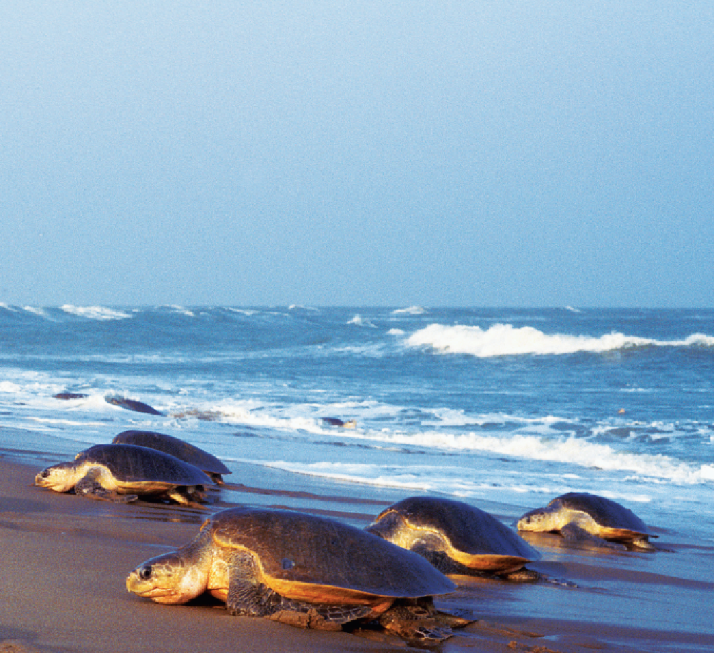
The picture shows the splashing waves of the bright blue sea is in the background.
A Large number of female Asea turtles come over to sandy beach for mass nesting.
The description of the picture is ends
In most parts of the world, Olive Ridleys come ashore alone to lay their eggs. However, Odisha is one of the only three places in the world where a phenomenon known as 'mass nesting' or Arribada takes place. On certain nights during the nesting season, thousands of female turtles come ashore simultaneously to lay their eggs on particular beaches.
The description of the picture is begins

The picture shows the female Olive Ridley digs a hollow space with its spoon like limbs and lays eggs.
The description of the picture is ends
Between the months of January and March, female Olive Ridleys come ashore at night to lay their eggs. This is quite a problem for them, as a turtle's front flippers enable it to swim gracefully and effortlessly but are not very useful for moving on land. The turtle has to haul itself laboriously onto the beach. Then it chooses a spot well away from the high-tide line. Here, it scoops out a nest cavity 45 centimetre deep, into which it lays about 100 eggs. Each egg is in the shape and size of a table tennis ball. Once all the eggs are laid, the turtle fills in the cavity, then it camouflages the nest by tossing sand on it using its flippers. That done, it returns to the sea. The eggs are left to incubate under the warmth of the sun.
In many places around the world, local people follow the tracks of the turtle to its nest. They collect the eggs for eating. Jackals, domestic dogs and pigs too dig up and eat the eggs by following the scent left by the turtle. Those eggs that escape such people and predators hatch 45-60 days later. The hatchlings slash open the leathery eggshell with the help of a tiny 'egg-tooth’. This is like a razor blade at the tip of a hatchling's snout. When most of the eggs have hatched, the hatchlings push themselves upwards through the sand and emerge on the surface of the beach. From here they make a hurried ,dash, to the sea.
flippers - broad, flat limbs used for swimming
haul - pull with force
laboriously - with great effort
cavity - a hollow space
camouflage - hide or disguise something
incubate - hatch eggs using warmth
predators - animals that kill other animals for food
slash – cut
snout - pointed nose of an animal
emerge - come out
Are these statements, right? Discuss with your partner and (✓) them if they are correct. Correct them if they are wrong. Share your answers in class.
1. Female Olive Ridleys come ashore at night to lay eggs.,dash,
2. The eggs of an Olive Ridley are in the shape and size of a cricket ball. ,dash,
3. Ridleys come to lay their eggs in the month of January. ,dash,
4. The turtles use their flippers and make a hollow for their nests. ,dash,
5. The hatchlings use a tiny egg-tooth to come out of the eggs. ,dash,
There is an interesting aspect of sea turtle biology. The temperature inside the egg determines the sex of the embryo while it is growing. When the eggs develop at 27°C – 28°C only male hatchlings are produced. At 30°C only female hatchlings are produced. An equal mix of male and female hatchlings is produced only when the eggs incubate at precisely 29°C - 30°C.
The description of the picture is begins
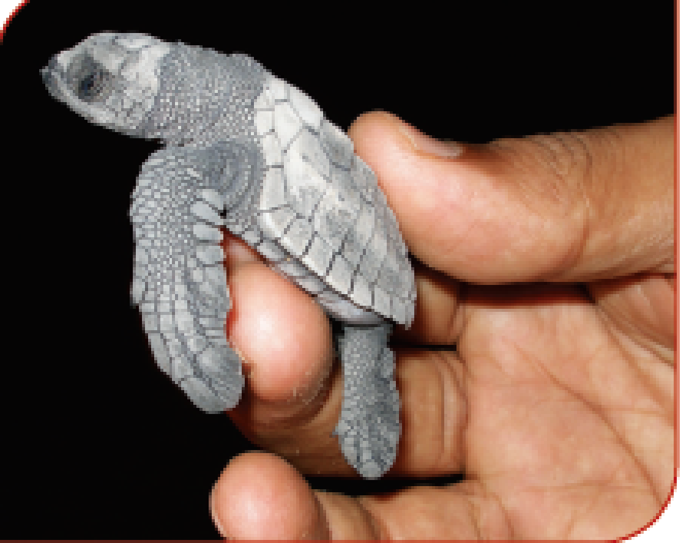
A person holding a greyish lovely Olive Ridley hatchling is presented in the picture
The description of the picture is ends
Many of these tiny hatchlings, which weigh less than 20 grams each, will not even reach the sea. They will fall prey to crabs or birds even before they reach the water. Most of those that do make it into the water will also be eaten by many predators in the sea within the first few days of their lives. In fact, scientists estimate that only one in every thousand hatchlings becomes an adult. It is perhaps to ensure that enough hatchlings survive to keep the species going that sea turtles lay so many eggs.
After many years of swimming in the open ocean, the female hatchlings that have become adults return to the same beach where they were born. They come there to lay their own eggs. How they manage to find the place after so many years in the sea is one of the many mysteries of these fascinating reptiles!
Sea turtles are among the many wonderful creatures we share this planet with.
They have survived natural dangers for millions of years. But, sadly, human activities during the last few decades have put them in grave danger. There are many factors that threaten their survival. People hunt them for their meat or collect their eggs. Sometimes they are accidentally trapped in the nests of motorboats. Problems like pollution, dumping of plastics into the ocean and construction activities on nesting beaches also hurt their survival. Only by systematically tackling these problems, and removing these threats, can we ensure that sea turtles will continue to exist in the years to come.
Shekar Dattatri. The following information is about Shekar Dattatri.
The box gives information Shekar Dattatri writes popular articles on wildlife, conservation and film making. He has been interested in nature from childhood. He is an award-winning wildlife and conservation filmmaker. For more information on him visit www.shekardattatri.com
Serial number |
Problems faced by the hatchlings |
Effect |
Solution |
1. |
Pollution |
Survival of sea turtles becomes difficult. |
Reduce the usage of plastics. |
2. |
Predators |
,dash, |
,dash, |
3. |
Human Activities |
,dash, |
,dash, |
IMAGE,
QR CODE DLOWR
survive - continue to live
mysteries - facts that are difficult to understand
fascinating - attracting greatly
decade - a period of ten years
1. The ,dash, is a biological relative of tortoises.
a. sea turtle
b. fish
c. reptile
2. In India's coastal waters we can see a species of ,dash,
a. tortoises
b. sea turtles
c. dolphin
3. Sea turtles come to the shore to ,dash,
a. visit their birth place
b. lay eggs
c. go back to sea
4. It is a problem for sea turtles to come ashore because ,dash,
a. they find it difficult to walk on sand
b. they don't know their way to the shore
c. animals and people hunt them
5. A turtle's flippers help it to -,dash,
a. swim
b. dig a nest
c. climb
6. A sea turtle camouflages its nest by tossing sand on it to ,dash,
a. hide its eggs from predators
b. incubate eggs in the warmth of the sun
c. keep the hatchlings safe
Write them below. Then use the words to frame sentences of your own.
Section 1 |
Section 2 |
Example, beach |
We like to play in the sandy beach. |
dash |
dash |
dash |
dash |
dash |
dash |
dash |
dash |
1. Tiny hatchlings fall ,dash, (pray / prey) to many predators.
2. Sea turtles live their ,dash, (hole / whole) life in the sea.
3. The turtles come ashore only during the ,dash, (night / knight).
4. The predators follow the ,dash, (sent / scent) of the turtles to eat their eggs.
5. The female turtles lay eggs and go back to the ,dash, (see / sea).
1. This word rhymes with seen.
2. This animal has two horns and a spotted coat.
3. This is a huge sea animal.
4. Sounds like hair
5. Shines brightly
6. Rhymes with load
The description of the picture is begins
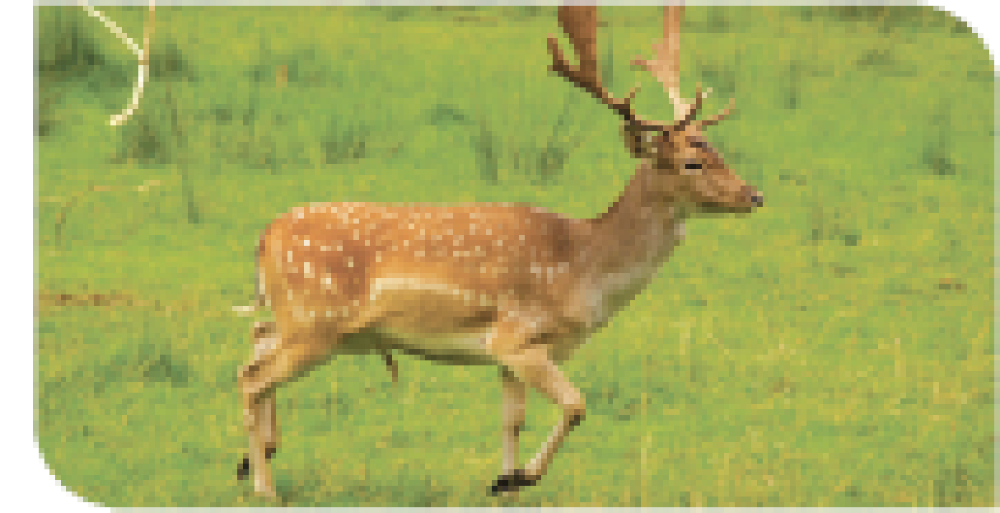
The picture of a bouncing deer.
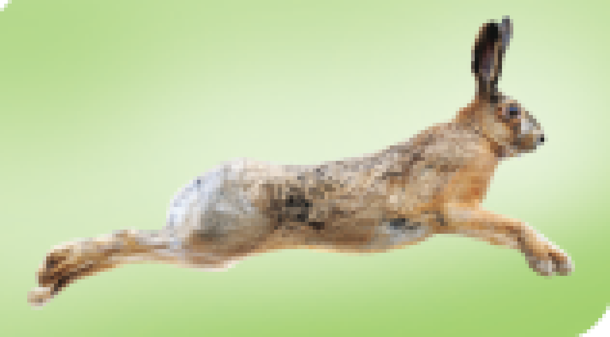
THE PICTURE OF A BOUNCING RABBIT
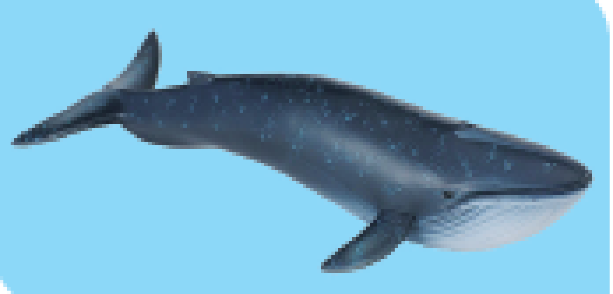
the picture of a dolphin
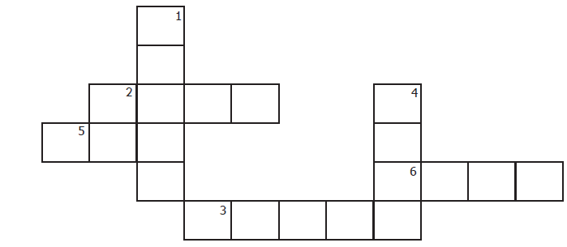
The grid shows the,
1. The first clue answer is five letter word.
2. The second clue answer is four letter word.
3. The third clue answer is five letter word.
4. The fourth clue answer is four letter word.
5. The fifth clue answer is three letter word.
6. The six clue answer is four letter word.
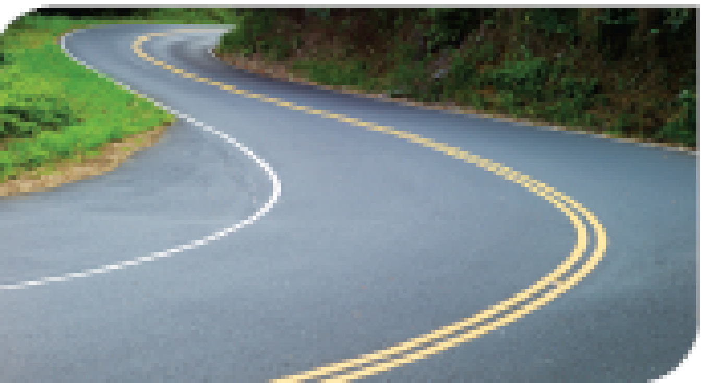
The picture of a ROAD
The picture of a sun
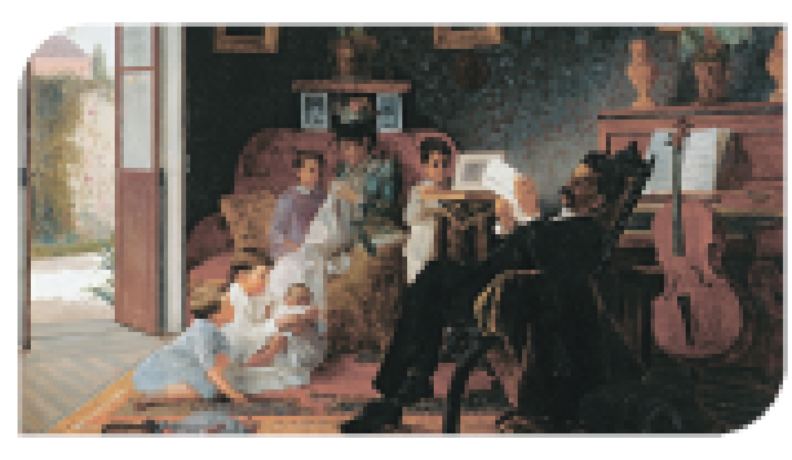
The picture of a crowd
The description of the picture is ends
Don't Say |
Say |
Note |
I cannot see much stars in the sky. |
I cannot see many stars in the sky. |
Use many with countable plural nouns. Use much with uncountable nouns. |
I have little friends. |
I have few friends. |
Use few with countable nouns. Use little with uncountable nouns. |
Every test contains twenty questions. |
Each test contains twenty questions.
|
Each refers to an individual object or person. Every refers to a group of or people. |
Is there any lemonade left?
|
Is there some lemonade left? |
Any is used for questions and negatives. Some is used for positive. |
At 10 a.m today, a monkey escaped from the zoo. The zoo keeper was entering the cage to feed the animal when he saw it breaking through the fence. Quickly, he rang up the police station to report the escape. If you see the monkey, you must inform the police on the following number.180345778
IMAGE,
QR CODE CO7YD
Questions |
Responses |
What escaped from the zoo? |
a tiger ,dash, a monkey ,dash, |
When did it escape? |
at 10 p.m ,dash, at 10 a.m ,dash, |
How did it escape? |
pushed out of the fence ,dash, went over the fence ,dash, |
What did the zoo-keeper do? |
rang up the police ,dash, rang up the warden ,dash, |
When should you call or dial 180345778? |
when you see the monkey ,dash, to report the escape of the monkey ,dash, |
*Listening text is on page-150
Texts for Listening
Unit – I
Flash news of an escaped monkey
At 10 a.m today, a monkey escaped from the zoo. The zoo keeper was entering the cage to feed the animal when he saw it breaking through the fence. Quickly, he rang up the police station to report the escape. If you see the monkey, you must inform the police on the following number.180345778
Unit – II
Nandhu and the Lamp
One morning, as Nandhu was walking to school, a big truck went past him. The truck went over a bump in the road and a box fell down. The box broke open. The truck kept going and was soon gone.
Out of the broken box there fell a small brass lamp. It looked just like the magic lamp that was drawn in Nandhu’s storybook. It was small and made of brass. It had a handle and a cover. Nandhu wondered if this was a magic lamp too. He decided to take it home and try it out.
“Where did you get it?” said his mother, “It looks like a lamp.”
“It fell off a truck. Is it a magic lamp? It looks just like the one in the book,” said Nandhu. As he wiped the lamp, Nandhu noticed a small button on the side. When he pressed it a bright blue light came on and lit the whole room.
Unit – III
Spices
Red peppers have a lot of vitamin C which helps the body fight infections. Paprika (red chilli powder) made from red peppers has more vitamin C than even lemon juice. Only you cannot eat too much of it!
To get 1 pound (450 g) of dry saffron (kungumapoo in Tamil) it requires up to 75,000 flowers and 20 hours of labour. That is why it is so expensive.
Mints are not only given at the end of a meal in restaurants to help refresh your breath, but herbs like peppermint help settle nausea and upset stomach.
The description of the picture is begins
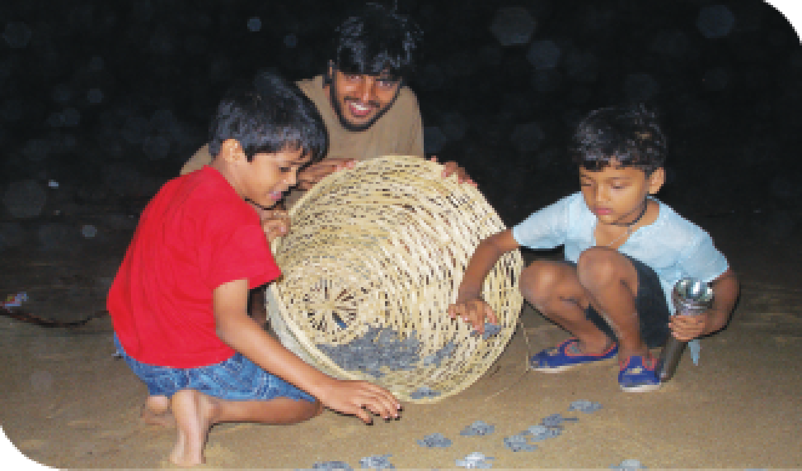
The photo of two curious boys and their kind brother gathering Olive Redley hatchlings in a basket is given.
The description of the picture is ends
Volunteers of the students' Sea Turtle Conservation Network (SSTCN) release Olive Ridley hatchlings into the sea. *Listening text is on page-150
The words given for a short talk
sand, waves, when, as soon as, collect, enjoy, hatchlings, basket, boys, night, rough sea, many, eggs, incubate, hatchery, after
PICTOGRAMMAR
The table gives details about the subject and predicate with examples
The description of the picture is begins

The cartoon of a cricket batsman is given
The description of the picture is ends
The SUBJECT of a sentence is always a noun or a word / words that can take the place of a noun.
The description of the picture is begins

The cartoon showing the batsman hits a ball is given
The description of the picture is ends
The PREDICATE of a sentence includes the verb and the object if there is one.
The description of the picture is begins

The cartoon of four children standing together is given.
The description of the picture is ends
The description of the picture is begins

The image of a Zoo is displayed.
The description of the picture is ends
The description of the picture is begins

The cartoon of a sleepy boy Raju is given
The description of the picture is ends
The description of the picture is begin

The cot with bed and pillow and the night lamp is near the bed is shown in the picture
The description of the picture is ends
subject |
predicates |
Subject 1, A turtle |
|
Subject 2, Turtles |
Predicates, live in the sea. is huge. have a connection with the land. are found in coastal waters. are wonderful creatures. has flippers to swim. |
The description of the picture is begins
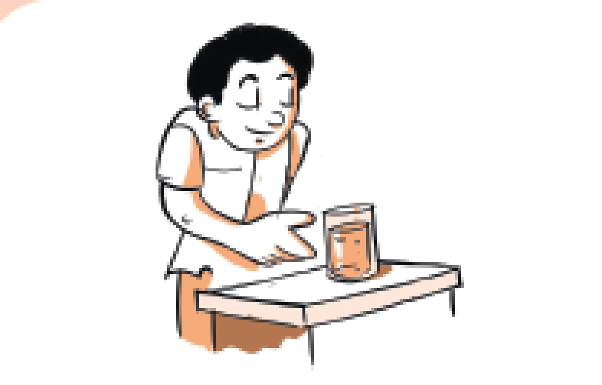
A boy is trying to take the glass tumbler from the table
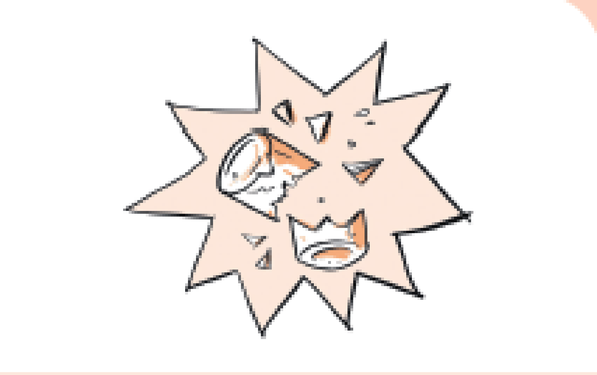
The image of the glass tumbler broken into pieces is given
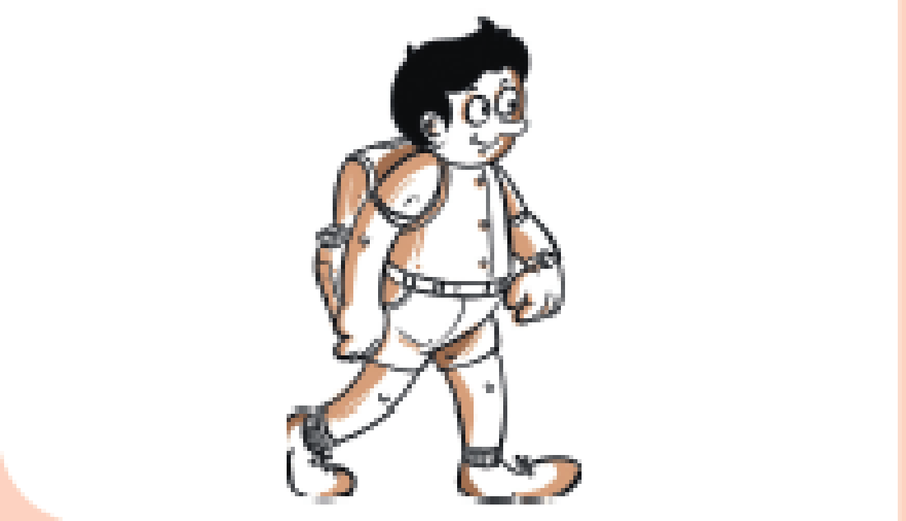
A cartoon picture of an energetic school boy with bag is given
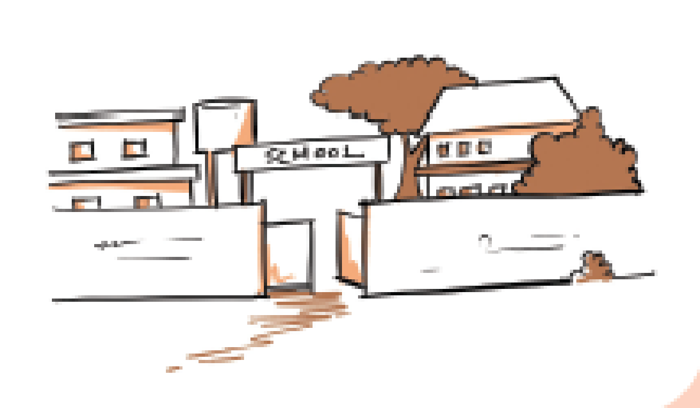
An attractive school with two big trees inside the compound is given
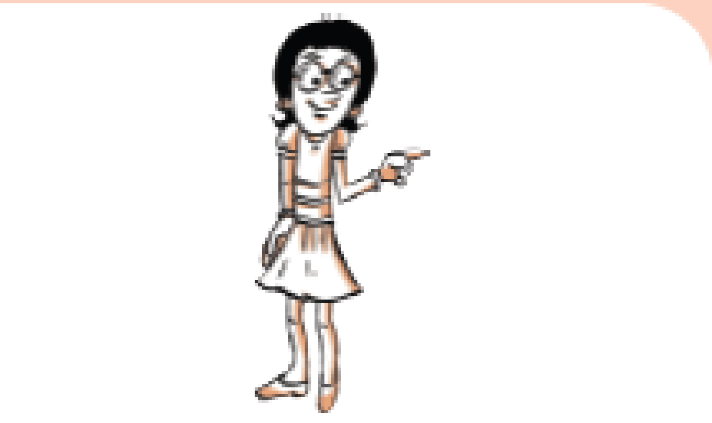
A beautiful girl pinpoints her index finger is given.
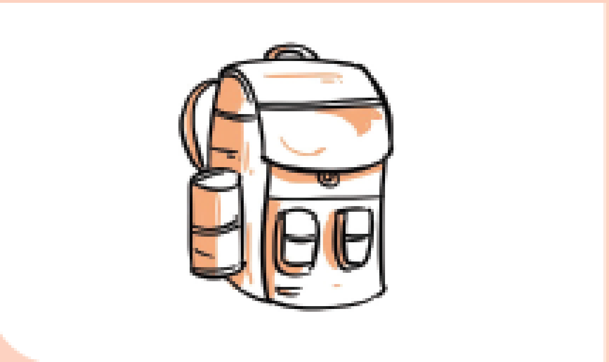
The image of a well packed school bag is shown.
The description of the picture is ends
1. Sea turtles - threaten the survival of sea turtles.
2. Hatchlings - uses its front flippers to swim.
3. A turtle - come ashore to lay eggs.
4. Many factors - cut open the leathery egg shell.
IMAGE,
QR CODE ND6P7
Tortoise |
Turtle |
reptile family |
reptile family |
land animal |
sea animal |
has a long life |
lives for many years |
uses tiny feet to walk |
uses flippers to swim |
eats grass, weeds and flowers |
eats insects and bugs |
Similarities |
Differences |
,dash, |
,dash, |
,dash, |
,dash, |
,dash, |
,dash, |
,dash, |
,dash, |
The description of the picture is begins
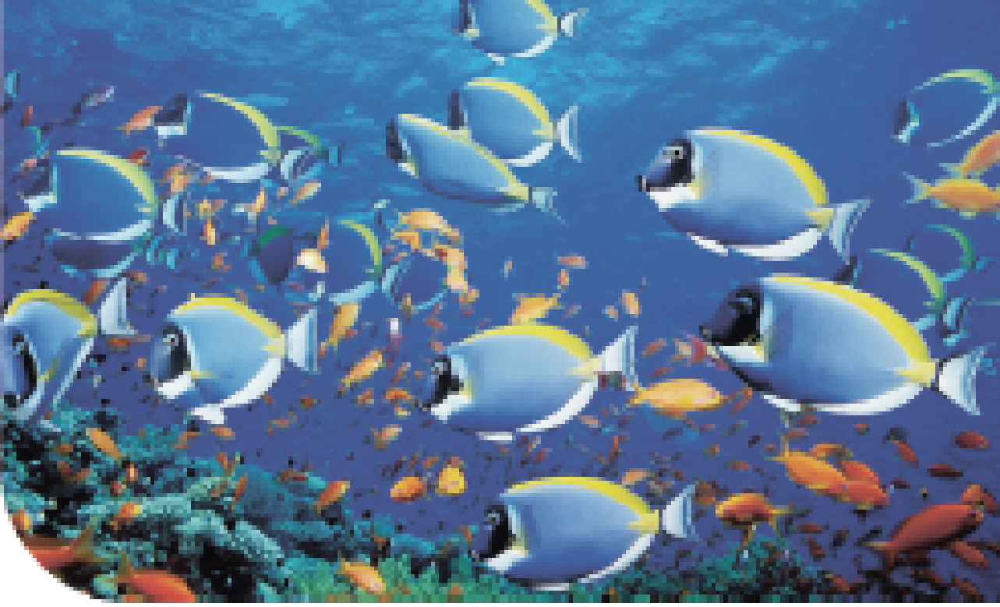
A colourful image of school of fish in the sea is given.
The description of the picture is ends
many, sea, animals, wonders, ocean, fishes, different colours, sizes, varieties rare species, deep sea, under the sea
IMAGE,
QR CODE 7ZI5O
The description of the picture is begins
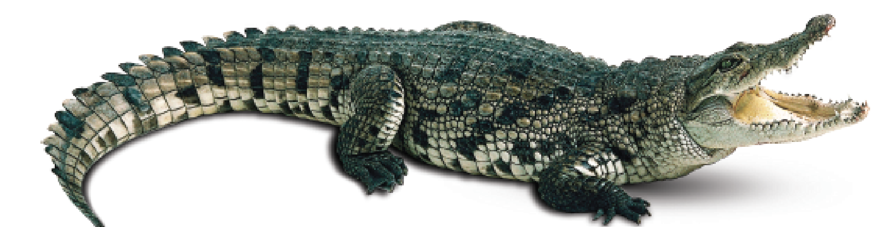
The fearful image of a crocodile with its mouth wide open is given.
The description of the picture is ends
How doth the little crocodile
Improve his shining tail,
And pour the water of the Nile
On every golden scale!
How cheerful he seems to grin,
How neatly spreads his claws,
And welcomes little fishes in,
With gently smiling jaws!
Author, Lewis Carroll
About the author Lewis Carroll
Box message “Lewis Carroll was an English writer. His most famous book is 'Alice in Wonderland'. This poem appears in it.”
doth - an expression of old English for 'does'
improve - to become better than before
cheerful - happy
gently - softly, mildly
The Madras Crocodile Bank is one of the largest reptile zoos in the world. It is a shelter for native wildlife and a secure nesting beach for Olive Ridley Turtles. It is located at East Coast Road, Kovalam in Chennai.
The rhyming words are, file, din, caws, nail, while, paws, mail, thin
1. claws, jaws, ,dash,, ,dash,
2. grin, in, ,dash, ,dash,
3. crocodile, Nile, ,dash,, ,dash,
4. tail, scale, - ,dash,, ,dash,
1. How cheerful he seems to grin
Who does 'he' refer to?
2. And pour the water of the Nile
What does the Nile refer to? Where is it?
3. And welcomes little fishes in
With gently smiling jaws!
Who welcomes the fish? Why?
Which line tells you that the crocodile is hungry?
IMAGE,
QR CODE 6RQHG
1. What is the poem about?
2. How does the crocodile's tail look?
3. What does 'improve his tail mean?
4. How does he spread his claws?
5. Why does he welcome little fishes?
6. Which line talks about the crocodile's mouth and his shape?
IMAGE
QR CODE 1BRX0
On a clear day in December 26, 2004, in the African country of Kenya a group of hippopotamuses (hippos) were swimming by the ocean. At that time, the Indian Ocean tsunami struck the Kenyan coast. The hippos were carried away into the sea by the tall, strong waves.
The next day the people came to the beach to look at the damage. They couldn’t see the group of hippos. But they did see the baby hippo on some rocks.
A number of people came down the beach to rescue the baby hippo. But it was not easy. Firstly, the baby was 600 pounds or about 270 Kilogram. No one could carry him like a baby. He was tired and frightened and hungry. So, he kept running away and rushing at the people. He was fast and slippery and was not easy to catch.
They used ropes, nets, boats and cars. But they were able to catch him only after a man called Owen wrestled the baby hippo to the ground. So, they called the baby Owen.
The description of the picture is begins
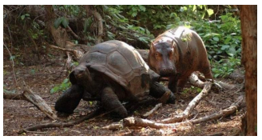
The picture of a owen and mzee is given
The description of the picture is ends
Owen was taken to a wild life sanctuary. Everyone thought he could be well looked after there. But Owen was not happy at all. He was tired and very frightened. As soon as he reached the sanctuary, he saw a large greyish tortoise. It looked a bit like his mother. He ran to the creature and hid behind it. Just like a baby hippo would hide behind its mother. The animal he chose was a 130-year-old giant tortoise called Mzee. Mzee was very surprised by Owen. But he let Owen cuddle close to him. Soon the two of them became friends.
At first, Owen did not know what to eat and how to eat. But he followed Mzee and started copying him just as he would have done with his mother. And Mzee taught Owen to eat the leaves, grasses and things that he ate. The two became good friends and would walk around together, swim together, sleep together and eat together. Soon they learnt to tell each other what they wanted to do.
This friendship astonished the people in the wild life park. It was unusual for a mammal and a reptile to bond and become friends. But that is what happened. Owen lost his mother and adopted a giant tortoise and learned to survive. The two of them became quite famous as a lot of news channels wrote and spoke about them. Even today you will find a lot of videos which show you the story of Owen and Mzee on the Internet.
IMAGE
QR CODE ZRM6L
1. The baby hippo was named after the ,DASH,
a. Rescuer,
b. tsunami,
c. storm.
2. Which sentence is correct?
a. Mzee did not know why Owen came close to him but he let him stay.
b. Mzee let Owen come close but he did not like it.
3. What did Mzee teach Owen in the wild life sanctuary.
a. To swim
b. to eat
c. to play
Owen was taken to a wild life sanctuary. Everyone thought he could be well looked after there. But Owen was not happy at all. He was tired and very frightened. As soon as he reached the sanctuary, he saw a large greyish tortoise. It looked a bit like his mother. He ran to the creature and hid behind it. Just like a baby hippo would hide behind its mother. The animal he chose was a 130-year-old giant tortoise called Mzee. Mzee was very surprised by Owen. But he let Owen cuddle close to him. Soon the two of them became friends.
1. Why was Owen taken to the wild life sanctuary?
2. Why did Owen hide behind Mzee?
3. Who is Mzee
C. Rearrange the following sentences in the correct order
•Owen was taken to a wild life sanctuary.
•Owen and Mzee became good friends.
•The villagers in Kenya struggled to rescue the hippo.
•Owen (a baby hippo) was separated from his family by a tsunami in 2004. • Owen meets a 130 –year- old tortoise named Mzee.
•A young man named Owen helped catch the hippo and it was named after him.
D. Discuss in pairs and write the answers
1. Do you like the story? Why or why not?
2. Identify the similarities and differences of Owen and Mzee
Draw a comic strip for the story. If time is available, share your project with class.
Help the needy
The description of the picture is begins
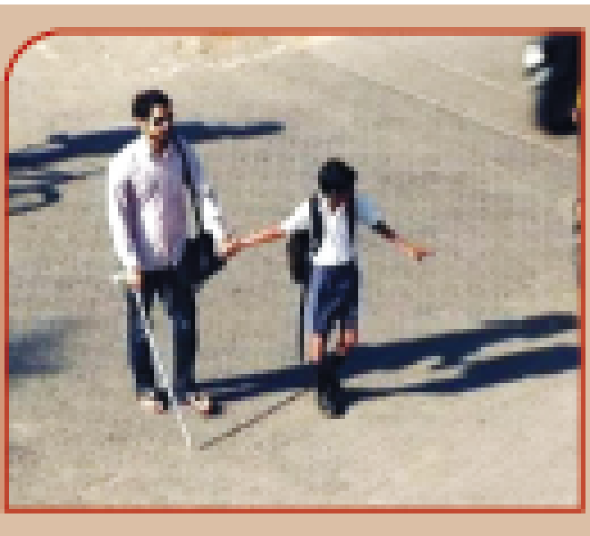
The picture of a school girl guiding a blind man to cross the road is shown.
dash,
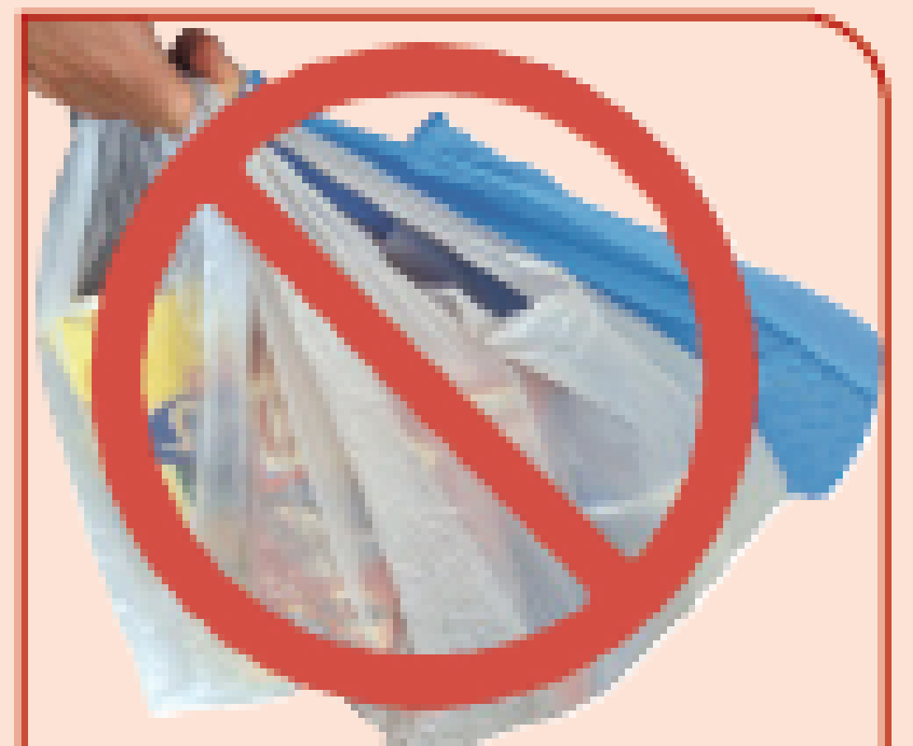
,dash,
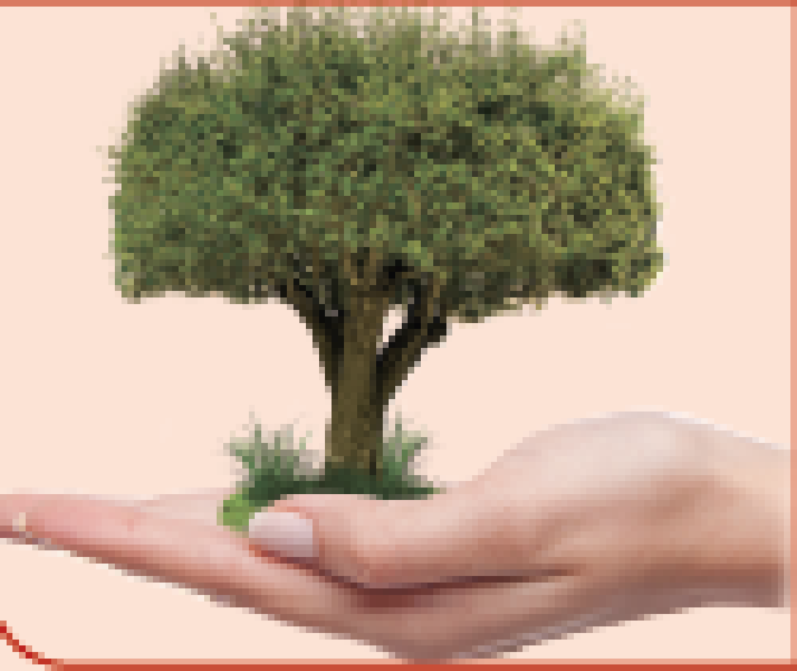
,dash,
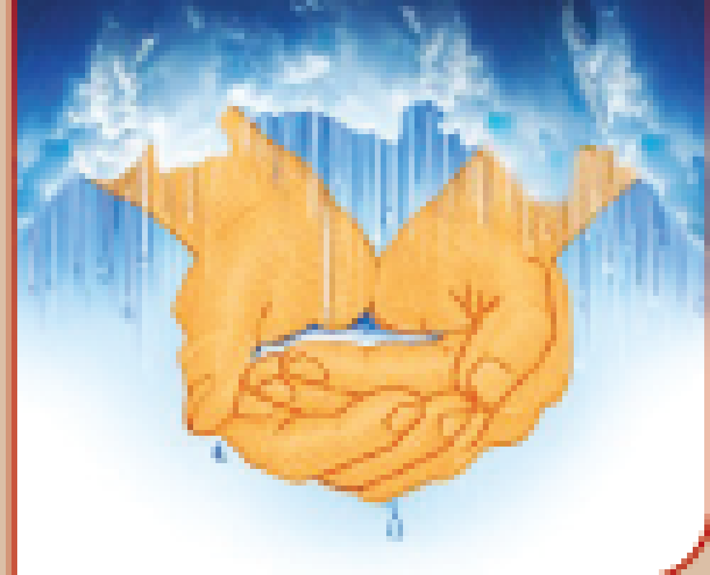
dash,
The description of the picture is ends
For Example: elephant, tiger, lion, monkey - Land animals
1. eel, seal, walrus, seahorse - ,dash,
2. pearl, coral, conch, oil - ,dash,
3. submarine, ship, yacht, ferry - ,dash,
4. kite surfing, scuba diving, parasailing - ,dash,
5. albatross, penguin, pelican, fish hawk - ,dash,
1. https://www.WorldWildlife.org> Species
2. https://en.m.wikipedia.org>wiki> Gahir
4. www.incredibleodisha.org > Gahirmatha
Book
1. The world of Turtles and Crocodiles- Zai & Rom Whitaker and Indraneil Das
2. Animal world - Aurobindo Kundu
Screen shot of the sea turtle game platform:
The description of the picture is begins
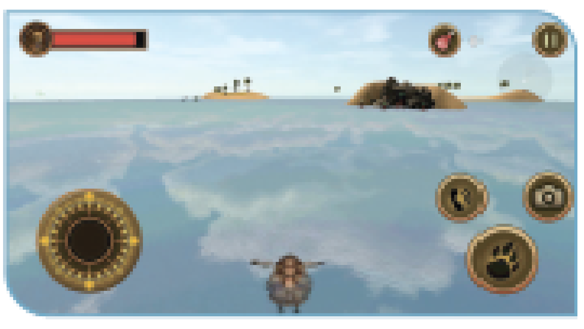
Screen shot of the sea turtle game platform is given.
The description of the picture is ends
IMAGE,
QR CODE SZH6O
1. Scan the QR code. It will go to a website.
2. You can see a link for the software / application.
3. Click the link to download the software / application.
4. Open the game and you can move the turtle by using the pointers.
5. Like this you can find more games on sea turtles. Locate the appropriate one and use it.
Step - 1 Type the word, 'sea turtle' in the search bar of the Android play store
The description of the picture is begins
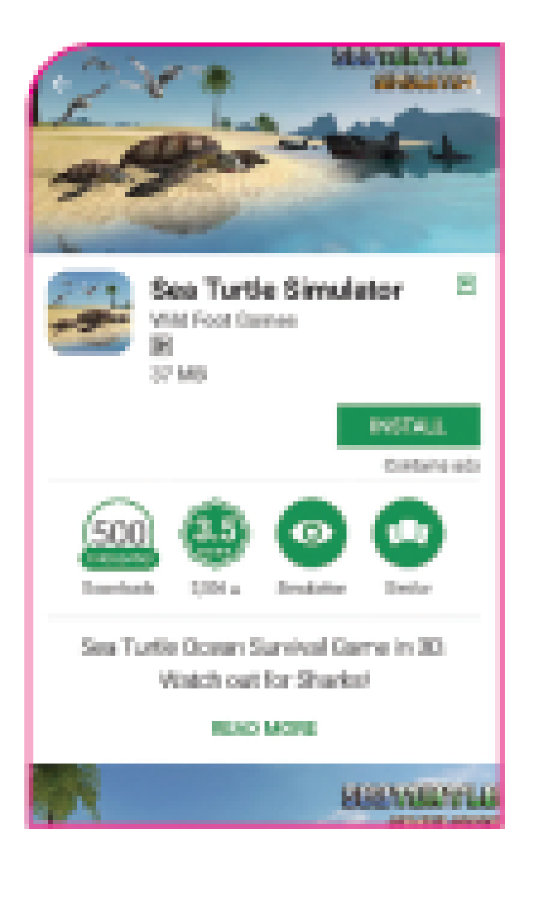
The image of the sea turtle game is given
The description of the picture is ends
Step - 2 Install the game and play it using the pointers
The description of the picture is begins
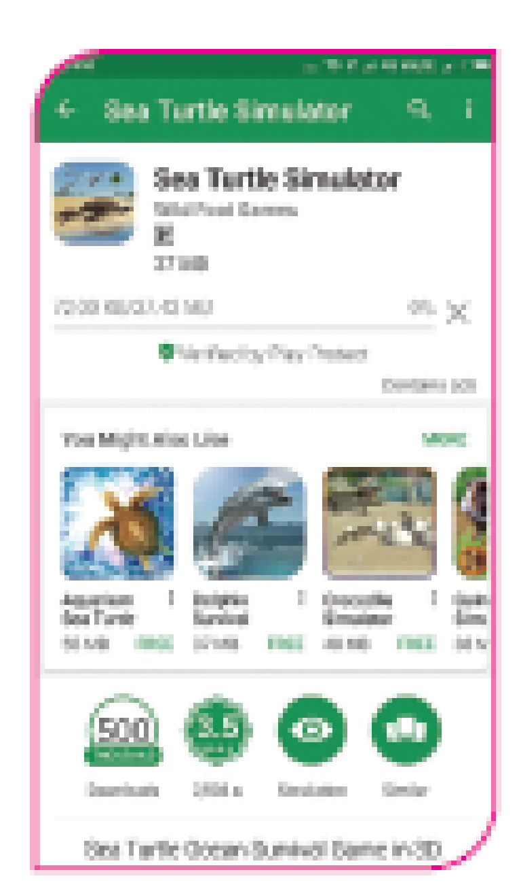
The image of the games turtle simulator is given
The description of the picture is ends
Step - 3 You can install similar such applications from play store
The description of the picture is begins
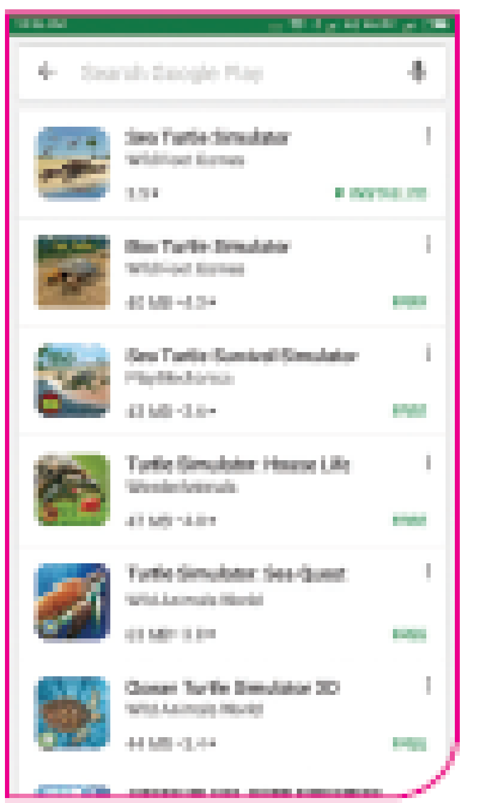
The image of many sea turtle games is given
The description of the picture is ends
Share your views about the aquatic animals with your friend after playing this turtle game.
The description of the picture is begins
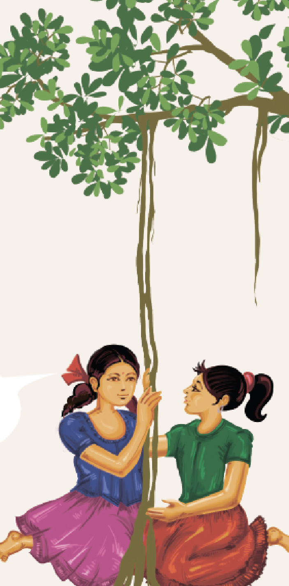
The picture of Two girls holding the arial roots of a banyan tree is given.
The description of the picture is ends
Hi, Ayesha, come on. Let's read the story about moving trees.
IMAGE,
QR CODE LM3GF
The description of the picture is begins
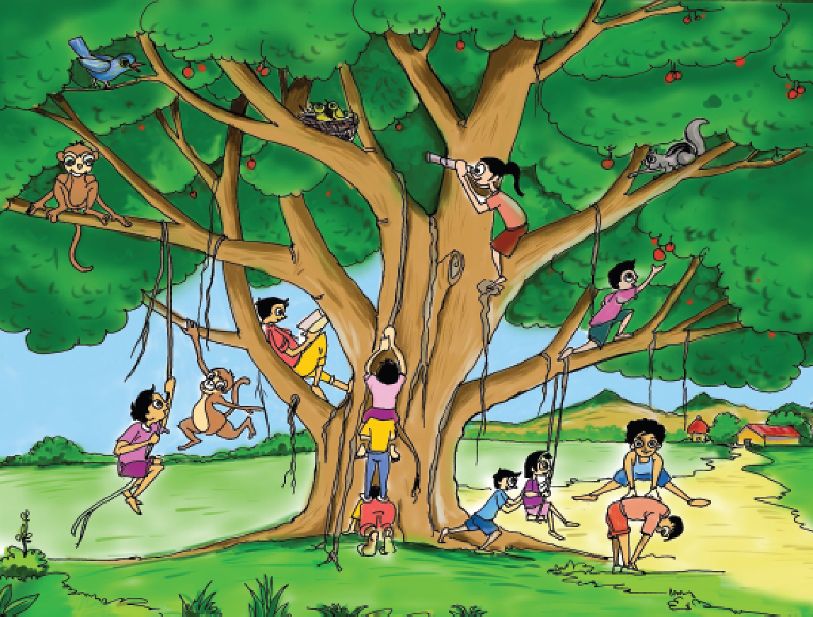
The picture. A big banyan tree with so many branches, some fruits, squirrel, sparrow with nestling, monkey, a boy plucking the fruit, a girl watching the nestling with telescope, a boy sitting in the branch and reading and some boys and girls are playing like swinging, climbing and jumping under the tree are shown in the picture
The description of the picture is ends
You can begin like this:
This picture is about
In this picture we can see
There are ...
1. What are the children doing? Describe their activities.
2. Would you like to be in their place? If so what would you enjoy the most?
The description of the picture is begins
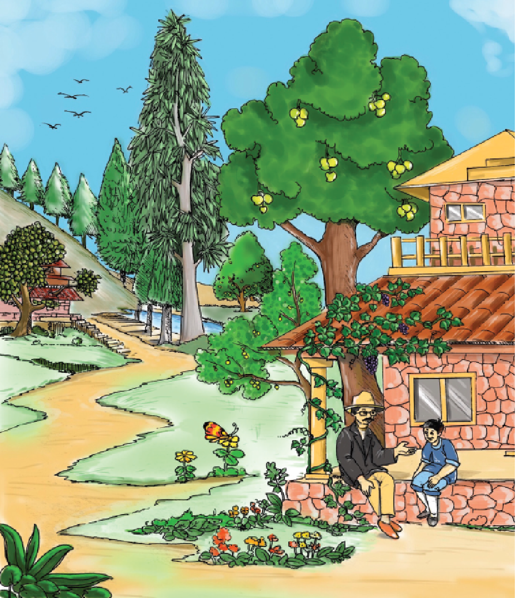
A grandfather and his grandson are sitting at elegant hilly house with flowering trees and a soft stream with some natural scenarios are shown in this picture.
The description of the picture is ends
One morning while I was sitting beside Grandfather on the veranda steps, I noticed the tendril of a creeping vine trailing nearby. As we sat there in the soft sunshine of a North Indian winter, I saw the tendril moving slowly towards Grandfather. Twenty minutes later, it had crossed the step and was touching his feet.
There is probably a scientific explanation for the plant’s behaviour - something to do with light and warmth perhaps _ but I liked to think it moved across the steps simply because it wanted to be near Grandfather. One always felt like drawing close to him. Sometimes when I sat by myself beneath a tree, I would feel rather lonely but as soon as Grandfather joined me, the garden became a happy place. Grandfather had served many years in the Indian Forest Service and it was natural that he should know trees and like them. On his retirement, he built a bungalow on the outskirts of Dehradun, planting trees all around _ lime, mango, orange and guava, also eucalyptus, jacaranda, and Persian lilacs. In the fertile Doon Valley, plants and trees grew tall and strong.
There were other trees in the compound before the house was built, including an old peepul that had forced its way through the walls of an abandoned outhouse, knocking the bricks down with its vigorous growth. Peepul trees are great show offs. Even when there is no breeze, their broad-chested, slim-waisted leaves will spin like tops determined to attract your attention and invite you into the shade. Grandmother had wanted the peepul tree cut down but Grandfather had said, ‘Let it be, we can always build another outhouse.
Grandmother didn’t mind trees, but she preferred growing flowers and was constantly ordering catalogues and seeds. Grandfather helped her out with the gardening not because he was crazy about flower gardens but because he liked watching butterflies and ‘There’s only one way to attract butterflies,’ he said, ‘and that is to grow flowers for them.’
India has more than 17000 species of flowering plants. Tamil Nadu with more than 5000 species - nearly 1/3rd of the total flora of India - probably has the highest diversity in India
1. When did the garden become a happy place for the author?
2. What are the two reasons the author gives for the plants moving towards grandfather?
3. Why does the writer think that the peepul tree is a great show off?
fertile - able to produce a lot of plants or crops
abandoned - left without care
vigorous - healthy and strong
The description of the picture is begins

The picture of grandson watering plants with his grandfather in river bank. Many trees under a cloudy sky are given.
The description of the picture is ends
Grandfather wasn't content with growing trees in our compound. During the rains, he would walk into the jungle beyond the river-bed armed with cuttings and saplings which he would plant in the forest.
'But no one ever comes here!' I had protested, the first time we did this. 'Who's going to see them?'
'See, we're not planting them simply to improve the view,' replied Grandfather. 'We're planting them for the forest and for the animals and birds who live here and need more food and shelter.'
‘Of course, men need trees too,’ he added, ‘To keep the desert away, to attract rain, to prevent the banks of rivers from being washed away, for fruit and flowers, leaf and seed. Yes, for timber too. But men are cutting down trees without replacing them and if we don’t plant a few trees ourselves, a time will come when the world will be one great desert
The thought of a world without trees became a sort of nightmare to me and I helped Grandfather in his tree-planting with greater enthusiasm. And while we went about our work, he taught me a poem by George Morris:
Woodman, spare that tree!
Touch not a single bough!
In youth it sheltered me,
And I'll protect it now.
‘One day the trees will move again,’ said Grandfather. 'They’ve been standing still for thousands of years but there was a time when they could walk about like people. Then along came an interfering busybody who cast a spell over them, rooting them to one place. But they’re always trying to move. See how they reach out with their arms! And some of them, like the banyan tree with its travelling aerial roots, manage to get quite far.’ We found an island, a small rocky island in a dry river-bed. It was one of those river-beds so common in the foothills, which are completely dry in summer but flooded during the monsoon rains. A small mango tree was growing on the island. ‘If a small tree can grow here.’ said Grandfather, ‘so can others.’ As soon as the rains set in and while rivers could still be crossed, we set out with a number of tamarind, laburnum, and coral tree saplings and cuttings and spent the day planting them on the island.
The Western Ghats is home to nearly 325 globally - threatened flora and fauna.
1. Why do we need trees? List four reasons that Grandfather gives.
2. Why did the author help his Grandfather plant trees?
3. What made Grandfather plant saplings on the rocky island?
protested - opposed or disagreed
nightmare - a frightening dream
interfering - stopping
The description of the picture is begins
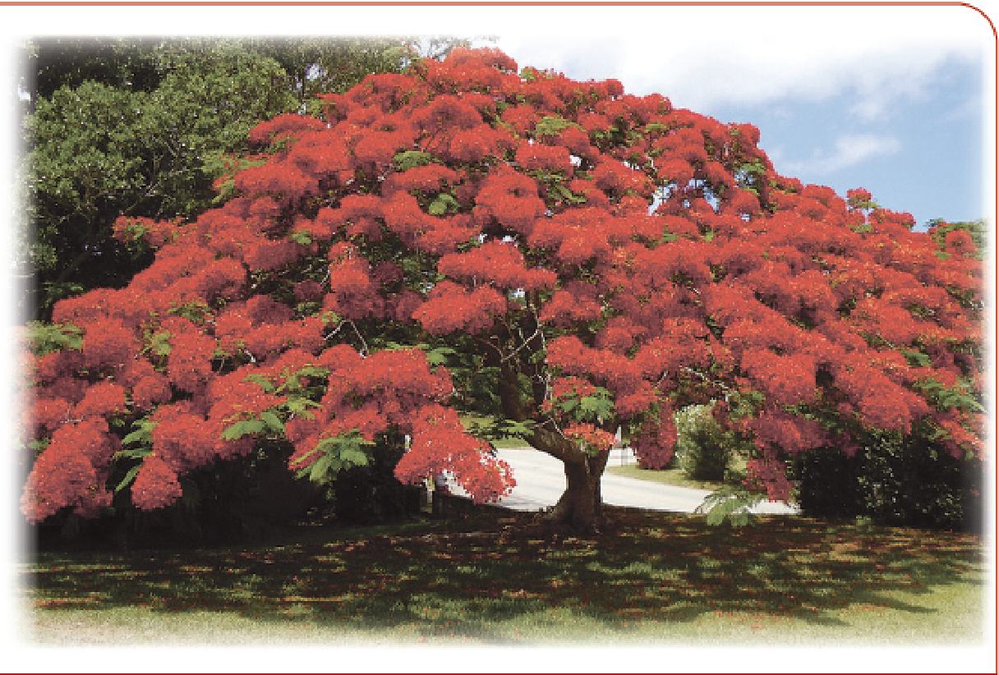
The given picture is tree
The description of the picture is ends
The monsoon season was the time for rambling about. At every turn, there was something new to see. Out of the earth and rock and leafless boughs, the magic touch of the rains had brought life and greenness. You could see the broad-leaved vines growing. Plants sprang up in the most unlikely of places. A peepul would take root in the ceiling; a mango would sprout on the window-sill. We did not like to remove them but they had to go if the house was to be kept from falling down.
‘If you want to live in a tree, that’s all right by me,’ said Grandmother crossly. ‘But I like having a roof over my head and I’m not going to have my roof brought down by the jungle.
’ Then came the Second World War and I was sent away to a boarding school. During the holidays, I went to live with my father in Delhi. Meanwhile my grandparents sold the house and went to England. Two or three years later, I too went to England and was away from India for several years.
Some years later, I returned to Dehradun. After first visiting the old house – it hadn't changed much - I walked out of town towards the river-bed. It was February. As I looked across the dry water-course, my eye was immediately caught by the spectacular red blooms of the coral blossom. In contrast with the dry river-bed, the island was a small green paradise. When I went up to the trees, I noticed that some squirrels were living in them and a koel, a crow pheasant, challenged me with a mellow 'who-are-you, who-are-you.'
But the trees seemed to know me; they whispered among themselves and beckoned me nearer. And looking around I noticed that other smaller trees, wild plants and grasses had sprung up under their protection. Yes, the trees we had planted long ago had multiplied. They were walking again. In one small corner of the world, Grandfather’s dream had come true.
Author, Ruskin Bond
The biography of Indian author Ruskin Bond is given:
Box message, Ruskin Bond is an award-winning Indian author of more than 500 books, short stories, essays and novels. He writes poetry and books for children as well as adults. He lives with his adopted family in Landour, in Mussoorie, India. He was awarded the Padma Shri in 1999 and Padma Bhushan in 2014.
1. What did Grandmother feel about trees growing in the house?
2. Why did the author leave town?
3. How did Grandfather's dream come true?
4. Describe what the author saw when he went back to the island.
Image
QR CODE AYPHC is given
rambling - wandering
sprout - when seeds begin to grow into small plants
spectacular - eye-catching
beckoned - to signal (someone) with your hand to ask the person to come closer or follow
IMAGE,
Qr code 5qz4x is given
1. According to the author the tendril was moving towards grandfather because it
a. needed light and warmth.
b. did not like the light and warmth.
c. wanted to be near Grandfather.
d. wanted to escape from the winter.
2. Grandmother had wanted the peepul tree cut down because
a. she did not like trees.
b. she wanted to grow flowers.
c. it was an old tree.
d. it was knocking down the bricks of the outhouse.
3. Grandfather helped grandma out with the gardening because he
a. liked gardening.
b. wanted to grow flowers to attract butterflies.
c. wanted to beautify the garden.
d. wanted to make the house green.
4. The author did not want to plant saplings in the forest because
a. no one would come to see them.
b. it was dangerous to enter the forest.
c. it would not be of any use to them.
d. no one would appreciate them.
5. Grandfather felt planting trees would help the forest because
a. he wanted to make the view beautiful.
b. the river-bed was dry.
c. animals and birds in the forest would love him.
d. the animals and birds would find it easier to live.
6. When the author returned from England to Dehradun, he found Grandfather's dream had come true because the
a. old house had changed.
b. river was full.
c. trees had red flowers.
d. forest covered the island.
You can begin the story like this:
The author's grandfather served in the Indian Forest Service.
After his retirement he built ,dash,--
Now continue the story. Each one should say one sentence.
Don't say |
Say |
Note |
Who do you want to meet? |
Whom do you want to meet? |
‘Who' for subject and 'whom' for object. If you can replace it with 'he' or 'she', use 'who'. If you can replace it with him' or 'her', use 'whom'. |
Did not you meet him yesterday? |
Didn't you meet him, yesterday? |
Use contracted form of verbs like 'is', 'do' or 'have' in questions. |
How many luggage did you bring? |
How much luggage did you bring? |
Use how many for countable nouns. Use how much for uncountable nouns. |
What colour do you want - red or green? |
Which colour do you want - red or green? |
'What' is used for unlimited number of choices. Which is used for limited number of choices. |
out |
root |
river |
wall |
water |
garden |
flower |
body |
sun |
hill |
aerial |
bed |
busy |
sill |
window |
house |
foot |
shine |
compound |
fall |
The words are lone, blossom, fertile, vigorous, place, constant, complete, strong unlike, great, cross, immediate, broad.
Suffix: A letter or letters added at the end of a word to make a different or a new form
of the word. Example., lone + ly= lonely
All the words begin with 'S' and are from the text.
Words are: hard, fat, weak, big, fast, hide, rough, dull
The description of the picture is begins
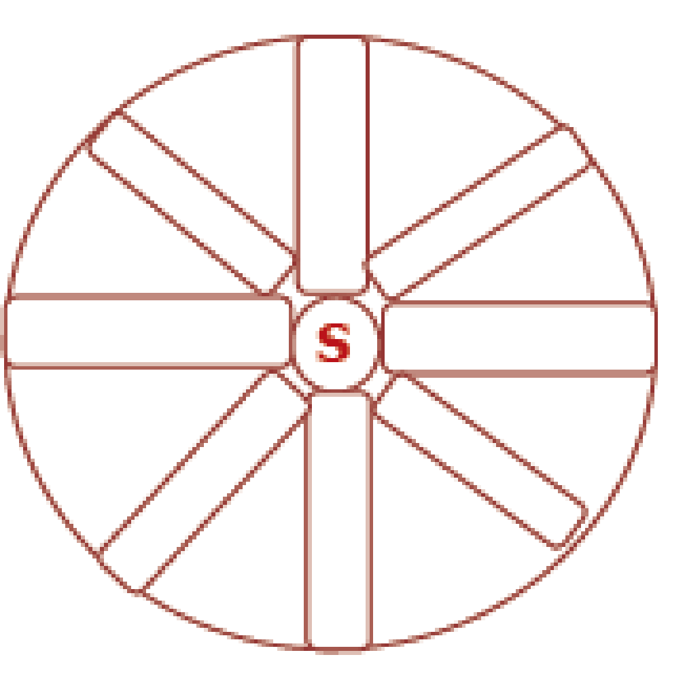
The picture of a wheel with eight stripes and ‘s’ at the centre is given.
The description of the picture is ends

IMAGE,
QR CODE TV9Q3 is given.
One morning, as Nandhu was walking to school, a big truck went past him. The truck went over a bump in the road and a box fell down. The box broke open. The truck kept going and was soon gone.
Out of the broken box there fell a small brass lamp. It looked just like the magic lamp that was drawn in Nandhu’s storybook. It was small and made of brass. It had a handle and a cover. Nandhu wondered if this was a magic lamp too. He decided to take it home and try it out.
“Where did you get it?” said his mother,
“It looks like a lamp.” “It fell off a truck. Is it a magic lamp? It looks just like the one in the book,” said Nandhu. As he wiped the lamp, Nandhu noticed a small button on the side. When he pressed it a bright blue light came on and lit the whole room
The description of the picture is begins

A girl planting a sapling and a boy watering the sapling is shown in the picture.

The conversation picture of a girl and a boy standing near a sapling is given.

A girl swinging with a boy under a tree is given.

The man and his wife sitting under the tree with their playing child picture is given.

The picture of a man who is cutting down the tree with the imagination of building a wooden house is given

The picture of an old man sitting on the log of a cutdown tree is given
The description of the picture’s is ends
Ducks swim in water.
The description of the picture is begins
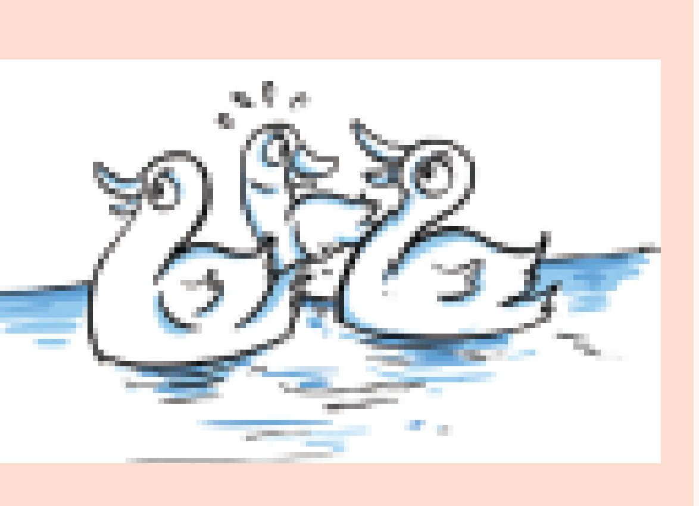
The picture of three ducks sailing in the water is given.
The description of the picture is ends
What do you want?
The description of the picture is begins
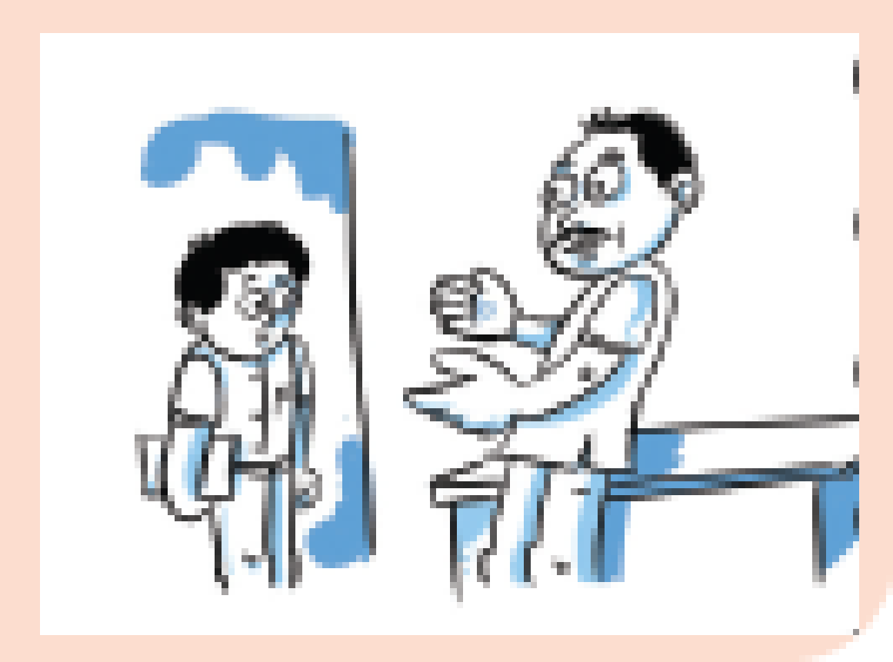
Teacher and student in classroom is shown
The description of the picture is ends
The description of the picture is begins
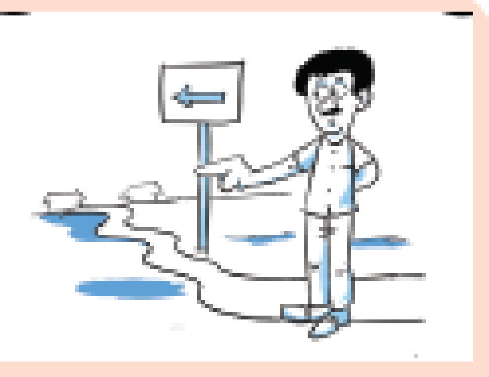
The picture shows a man standing near a road signal is given.
The description of the picture is ends
How good these flowers smell!
The description of the picture is begins
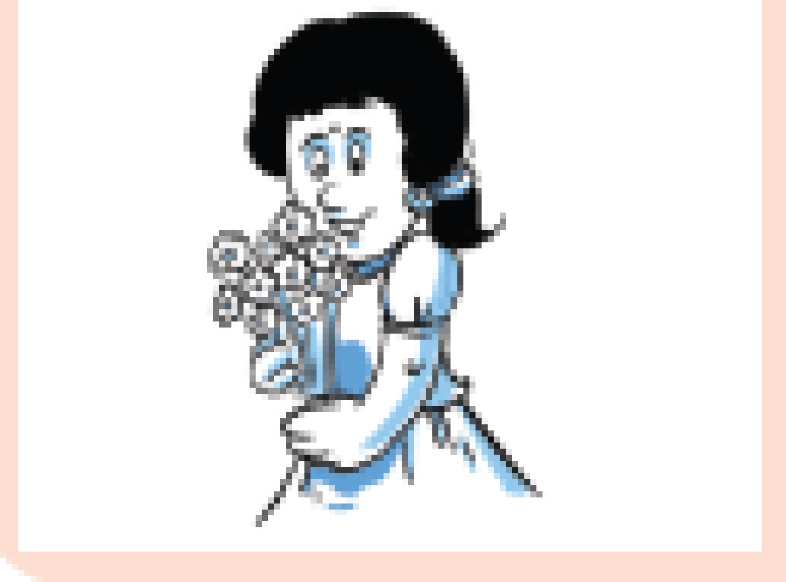
A girl smells a bunch of flowers is shown in the picture.
The description of the picture is ends
IMAGE,
Qr code GPY7E is given
1. ,dash,-a beautiful flower!
a. How
b. Wow
c. What
d. Hurrah
2. ,dash,-play football?
a. You can
b. Can you
c. Have you
d. You could
3. ,dash, did you go yesterday?
a. Which
b. Where
c. What
d. Who
4. ,dash,-us go for a walk.
a. Shall
b. May
c. Let
d. Can
5. ,dash, like to play hide and seek.
a. He
b. She
c. I
d. Muthu
1. One always felt like drawing close to him.
2. But no one ever comes here!
3. Who's going to see them?
4. Come here.
1. This is a banyan tree.
2. Is this a banyan tree?
3. What a beautiful banyan tree!
4. Look at this banyan tree.
1. The tendril moved towards grandfather.
2. I want a roof over my head.
3. Please do not cut trees.
4. We spent the whole day planting saplings.
5. Will you please remove the trees growing on the wall?
6. There was a forest on the island.
7. Go to the river bed.
8. The island was a green paradise.
9. Grow more trees to protect nature.
10. Grandfather's dream had come true.
The description of the picture is begins
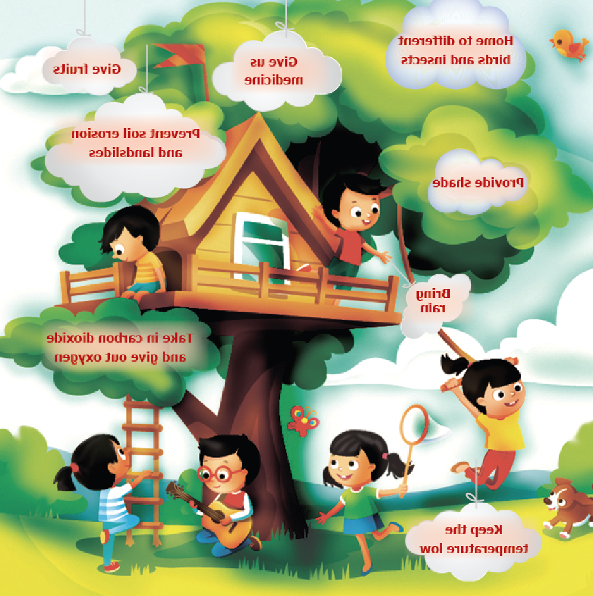
A picture of a wooden house builds on the top of the tree. Some children playing around the tree and it depict the uses of trees.
The description of the picture is ends
If you cut down trees
Your children will pay the fees
The description of the picture is begins
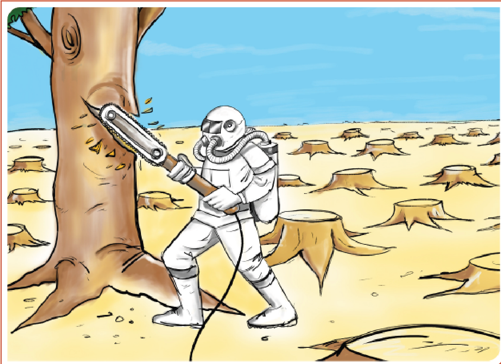
1. An astronaut cutting a tree with a saw.
2. Many cutdown trees are also shown in the picture.
The description of the picture is ends
IMAGE, QR CODE T R Z E G is given.
The description of the picture is begins
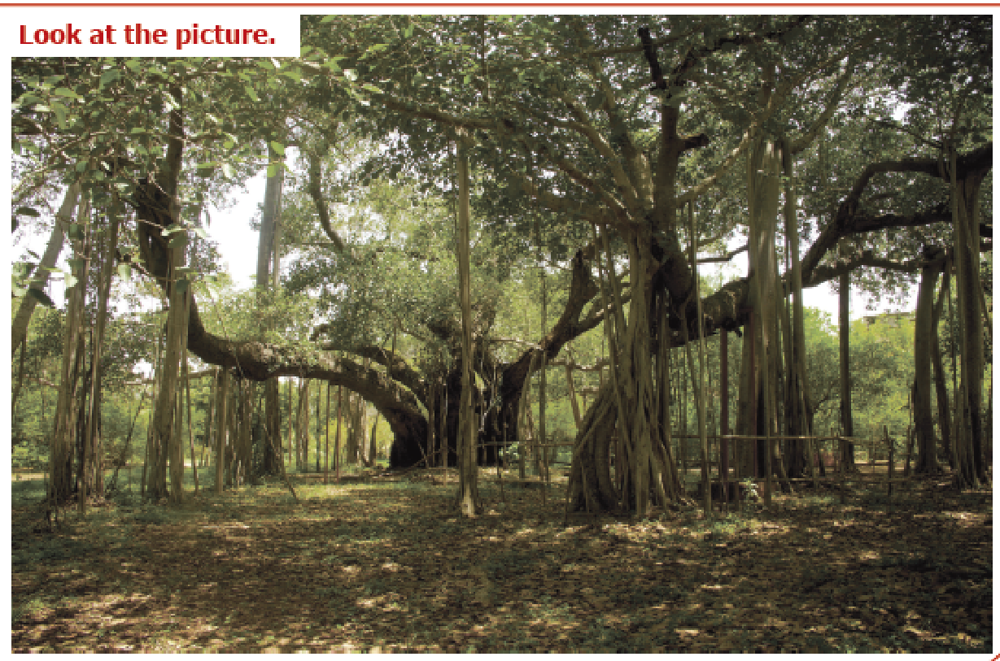
A photo of a big banyan tree is given.
The description of the picture is ends
Have you seen the Adyar Banyan Tree? Would you like to visit that place? Why?
The Banyan is the largest of trees,
The Peepul quivers in the breeze,
The Coconut grows up straight and tall,
The Neem tree's fruits are very small,
The Tamarind gives us pleasant shade,
The Date's leaf is as sharp as a blade,
The Teak tree gives us useful wood,
The Mango gives us fruit that is good.
Adapted and based on a poem by Sara Coleridge
quivers - shakes quickly
pleasant - enjoyable
p |
a |
s |
m |
a |
l |
l |
s |
g |
l |
a |
r |
g |
e |
s |
t |
h |
u |
e |
i |
j |
k |
h |
r |
l |
f |
t |
a |
l |
l |
a |
a |
m |
e |
n |
d |
s |
p |
r |
i |
q |
s |
r |
o |
t |
a |
p |
g |
u |
u |
v |
o |
x |
y |
n |
h |
z |
a |
d |
g |
h |
e |
b |
t |
B. Answer the following.
a. What does the peepul do?
b. How does the coconut tree grow?
c. What does the tamarind tree give?
d. What is as sharp as a blade?
e. What does the teak tree give us?
You can tell how old a tree is by counting its rings. This method of tree ring dating is called "Dendrochronology" and was developed in the early 20th century.
Friend |
Tree |
Friends always love each other |
T |
Respect each other |
R |
Interact with each other |
E |
Enjoy playing with each other |
E |
Never hurt your friends |
|
Do everything together |
|
IMAGE, QR CODE Y A U V K is given.
A rhyme is a repetition of the same sound in two or more words. Usually they come at the end of lines in poems and songs. Example. tower - power; king - sing
Discuss with your partner and pick out the rhyming words in the poem.
Read the poem aloud in pairs. Take turns to read the verses.

IMAGE, QR CODE BJ2OR is given
The description of the picture is begins

1. The pathetic picture of a man cutting down the tree with an axe.
2. All animals, birds and bees run out of fear.
The description of the picture is ends
Once upon a time there was a farmer. He lived in a village, up in the hills, beside a forest. In his farm where he grew many kinds of vegetables, he also had an apple tree. For many years the farmer and his family had enjoyed the tastiest apples from the tree. As a boy, the farmer and his friends played under the apple tree. They played hide and seek around the tree. They climbed the tree and swung on it and in season they plucked and ate the apples.
As the years passed the boy grew into a man. He took over the farm and continued to enjoy the fruits from the tree. In the meantime many small animals and birds started living in the tree. The man’s children and their friends started playing under it. The large and shady apple tree now grew old and was bearing fewer and fewer fruits. It was nice to sit under its shade in the summer but nothing grew under it. The farmer felt the space could be used to grow some vegetables. He also felt he could use the wood to build a new room in his house. Therefore, he decided to cut the tree. He did not think about the wonderful times he and his friends had playing around the tree or the delicious apples they ate. Rather he felt the tree had outlived its usefulness and should be cut down.
When the farmer took his axe and began chopping the tree, all the little animals, birds and insects that lived in the tree came rushing down. They started running around in alarm, chirping and squeaking all over the place. The farmer was adamant. He raised his axe and the uproar grew.
The farmer, however, forgot his childhood and his animal friends. He began to chop the tree harder. All the little animals became desperate, and wanted to protect the apple tree at any cost. They ran around in circles making a huge commotion.
This brought the children out. The farmer’s daughter and her friends began to plead with him. They gathered around the farmer and said, “Please don’t cut the tree. We play here just like you did. These small animals live here. If you cut the tree, where will they go? You can enjoy the shade when you become old. It is a beautiful tree.”
All of a sudden, the farmer noticed a small fruit hanging from a branch. It was an apple and looked as delicious as the ones he ate as a boy. He plucked it and bit into the juicy fruit. The memories of the fun he had had as a boy came rushing back. When his daughter saw the changed expression in her father’s face, she started pleading harder.
The farmer put down his axe. He understood that the tree was home to many lovely animals and provided them with so many things. He wanted his little girl to have the childhood that he had had. He threw away the axe and said to his daughter, “I promise that I will never cut this tree. You and your friends will have your tree and your playground.”
1. The farmer had spent his childhood playing under the tree.
2. The farmer felt the space could be used to build a house.
3. The apple tree requested the farmer not to cut it.
4. All the little animals were happy about the farmer's decision.
5. The apple tree was home for all the little animals.

IMAGE,
QR CODEE BX2SR is given
1. Please don't cut the tree.
2. You can enjoy the shade when you become old.
3. I promise that I will never cut this tree.
1. The animals became worried because
a. there was heavy rain.
b. the farmer began to chop the tree.
c. the farmer chased them away.
d. the tree became old.
2. The farmer's daughter and her friends came out because
a. they wanted to play under the tree.
b. they heard the commotion of the creatures.
c. the farmer called them.
d. they heard the farmer's voice.
3. The farmer promised that he would
a. grow more trees.
b. provide shelter to all the little animals.
c. not cut the tree.
d. be thankful to the children.
All of a sudden, the farmer noticed a small fruit hanging from a branch. It was an apple and looked as delicious as the ones he ate as a boy. He plucked it and bit into the juicy fruit. The memories of the fun he had had as a boy came rushing back. When his daughter saw the changed expression in her father's face, she started pleading harder.
1. What did the farmer notice?
2. What made him recall his childhood?
3. Why did his daughter start pleading?
1. He did not listen to their cries.
2. The farmer continued cutting the tree.
3. His childhood memories made him realize his mistake.
4. He decided to cut the tree thinking that it was useless.
5. The taste of the apple brought back his childhood memories.
6. The farmer had an old apple tree in his garden.
7. All the little animals in the tree pleaded with him.
8. He spent all his childhood playing under the apple tree.
1. Which part of the story do you like? Why?
2. If the little animals become homeless what will happen?
3. What made the farmer realise his mistakes?
Title of the story |
When the Trees Walked |
Name of the author |
Ruskin Bond |
Number of characters |
Three |
The character you like the most |
Grandfather |
Main points |
Grandfather loved trees and grew trees Grandmother loved flower gardening The author too loved trees and helped grandfather |
Title of the story |
|
Name of the author |
|
Number of characters |
|
The character you like the most |
|
Main points |
|
1. creeper: tendril: tree:
a. leaf
b. bough
c. flower
d. fruit
2. river: flow: mountain: ?
a. beautiful
b. high
c. trees
d. still
3. breeze: gentle: storm:
a. violent
b. wind
c. sea
d. rain
4. mango: sweet: lime:?
a. fruit
b. sour
c. tree
d. juice
5. bark: timber: flower:?
a. branch
b. plant
c. fruit
d. stem
1. https://www.forests.tn.gov.in/
1. Growing up with Trees - Ruskin Bond, NBT
2. The World of Trees - Ruskin Bond, NBT
3. A Bond of Love - Pushpa Saxena, NBT
4. Friends of the Green Forest - Ganesh Haloi, NBT
The description of the picture is begins
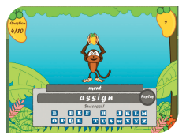
Screen shot of the Hangman Game is shown.
The description of the picture is ends
1. Scan the QR code. It will go to a website.
2. You can see a link for the software / application.
3. Click the link to download the software / application.
4. Click next and select the suffix by clicking the drop down arrow.
5. Click the letters to form the word.
The description of the picture is begins
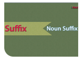
The picture of selecting the suffix by clicking the arrow is given.
The picture of selecting the question is given.
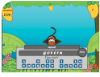
The picture of clicking letters to form the word govern is given.
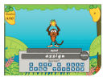
The picture of clicking letters to form the word assign is given.
The description of the picture is ends
IMAGE, QR CODE QYKES is given.
The description of the picture is begins
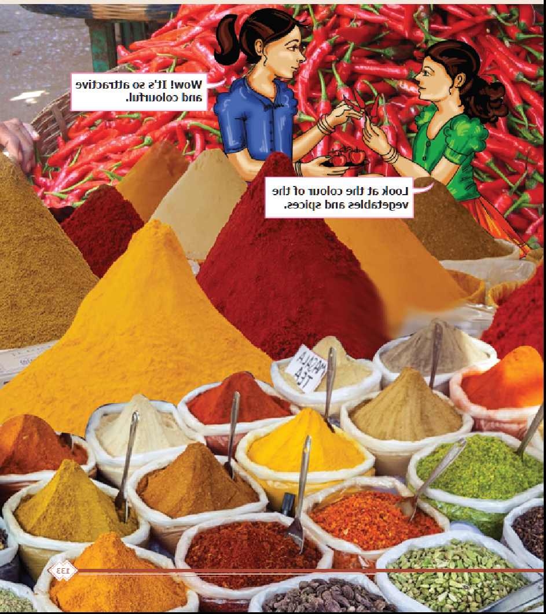
A colourful picture of red chillies and spices is given.
2. The conversing picture of two girls about the colour of vegetables and spices is given
The description of the picture is ends
The conversation of the two girls:
Girl 1: Wow! It's so attractive and colourful.
Girl 2: Look at the colour of the vegetables and spices.
IMAGE,
QR CODE UG9SP is given
The description of the picture is begins
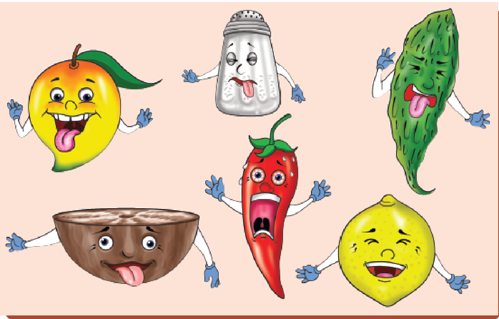
Picture s of Mango, salt, bitter guard, betel nut, red chilli, and lemon shows the experssion and depicting the taste are given.
The description of the picture is ends
Sweet |
sugarcane |
,dash, |
Sour |
lime |
,dash, |
Bitter |
bitter gourd |
,dash, |
Salty |
salt |
,dash, |
Astringent |
betel nut |
,dash, |
Pungent |
ginger |
,dash, |
The description of the picture is begins
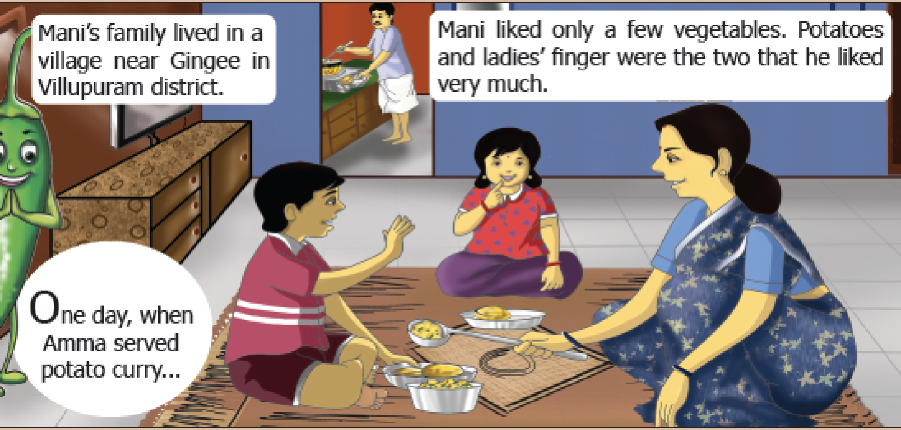
A picture of a mother served potato curry to her children is shown. The father is cooking in the kitchen.
The description of the picture is ends
Mani’s family lived in a village near Gingee in Villupuram district.
Mani liked only a few vegetables. Potatoes and ladies’ fingers were the two that he liked very much.
One day, when Amma served potato curry.
The description of the picture is begins
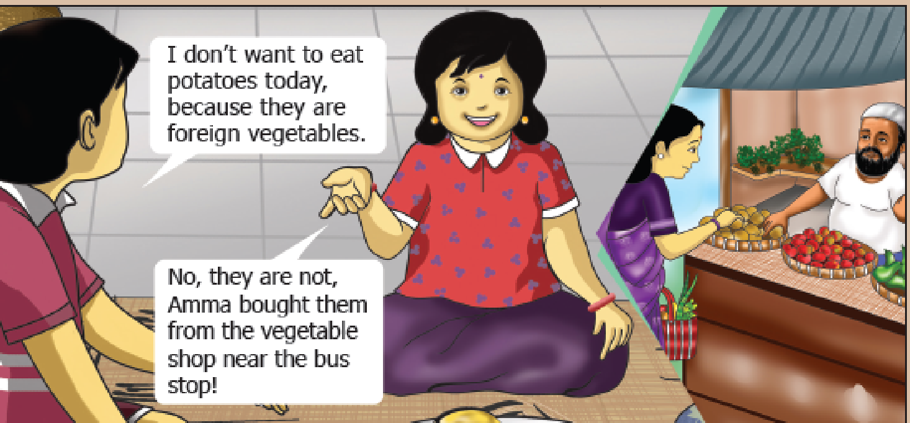
The picture of a vegetable vender selling vegatable to women, the picture of a boy and a girl conversing each other is given.
The description of the picture is ends
Mani says, “I don’t want to eat potatoes today, because they are foreign vegetables”.
Selvi says, “No, they are not, Amma bought them from the vegetables shop near the bus stop!”
The description of the picture is begins
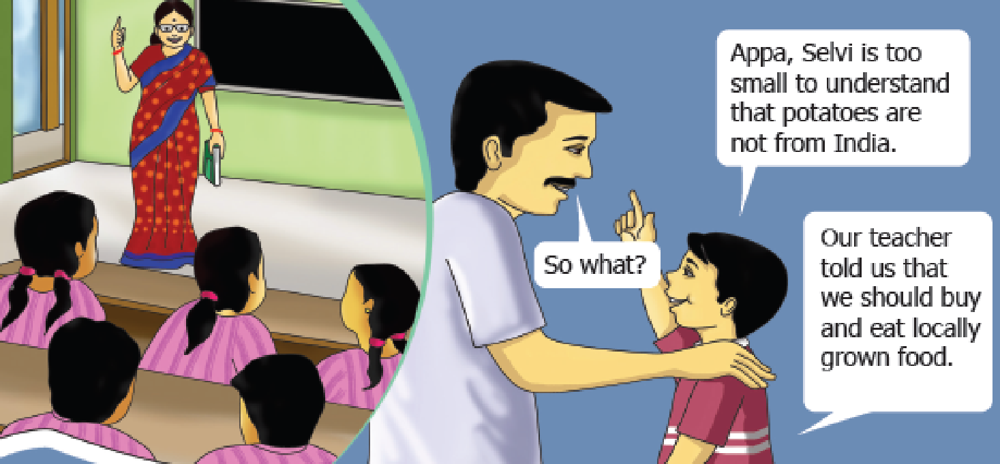
The picture of a teacher teaching in classrooms and a conversation of father and son is given.
The description of the picture is ends
Mani says, “Appa, Selvi is too small to understand that potatoes are not from India.”
Father says, “So what?”
Mani says, “Our teacher told us that we should buy and eat locally grown food.
The description of the picture is begins
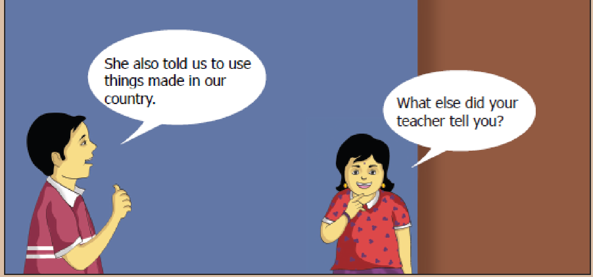
The conversing picture of Mani and Selvi is given.
The description of the picture is ends
Mani says, she also told us to use things made in our country.
Selvi asks, what else did your teacher tell you?
The description of the picture is begins
Parent talk with Mani and Selvi is given.
The description of the picture is ends
Father says, “And you cannot order tomato soup either, or even pineapple juice.
Mother says, “Then you cannot eat popcorn the next time we go to watch a movie.
Selvi says,” Mani, then you can’t order anything.
The description of the picture is begins
Mani converse with his mother is picturized.
The description of the picture is ends
Mani asks, “Why? Why can’t I eat popcorn or soup or. or anything that I want to?”
Mother says, “Don’t you know that corn, tomatoes and even ladies’ fingers all came from other countries.”
The description of the picture is begins
Selvi discussing with her father and her brother mani is given.
The description of the picture is ends
Selvi exclaims, “Really? How did they come to our country Amma? Did they get on an aeroplane and come here?”
Father says, “No, no, some merchants brought them here long ago by sea.”
Mani asks, “Why did they bring vegetables to India?”
The description of the picture is begins
Mother and Selvi conversing. A picture of vascodagama is also given.
The description of the picture is ends
Amma and Appa laughed.
Selvi says, “They could have brought some sweets. Why didn’t they?”
Mother says, “People came to India in search of spices especially black pepper. A man from Portugal named Vasco da Gama sailed to Kerala.”
The description of the picture is begins
The picture of a ship with pepper is presented. Mother and Selvi are conversing about the ship picture.
The description of the picture is ends
Mother says, “Imagine the joy of the sailors when they reached Kozhikode and found black pepper! They took a lot of pepper back to their country.”
Selvi says, “They took spices from India.”
The description of the picture is begins
The discussing picture of father and Mani is given.
The description of the picture is ends
Mani asks Yes, “but who brought the vegetables into India?”
Father answers, “The Portuguese brought them to India. Potato was one of those vegetables.”
The description of the picture is begins
The conversing picture of the mother with her children is shown.
The description of the picture is ends
Mani and Selvi looked at the potato curry on their plates. And quickly began to eat it.
Mani exclaims,” Wow! This potato has travelled so far!”
Mother says, “Careful, Selvi, don’t upset our foreign visitor!”
The description of the picture is begins
Father and Selvi are talking in this picture
The description of the picture is ends
Selvi pulled a long green chilli out of the curry.
Selvi asks.” Who? Who is our foreign visitor? Amma, you are making fun of me!”
Father says,” No, Amma is not making fun, she is talking about the foreign fruit chilli!”
The description of the picture is begins
The picture depicts the father showing the picture of south Americans and discussing with selvi and her mother is given.
The description of the picture is ends
Father says, “Chillies were very popular in South America but no one else in the world knew of this spicy fruit. One day a sailor named Christopher Columbus sailed to South America.”
Mother says, “ This sailor was actually looking for India. He wanted to buy black pepper. Instead, he found South America and the chilli!”
The description of the picture is begins
The mother shares her views with her daughter is drawn.
The description of the picture is ends
Selvi says, “ How sad for Columbus.”
Mother says, “ It was a little sad, but, because he went to South America, he found the chilli. It was as spicy as the black pepper. And so, Christopher Columbus packed the chilli and took it back to his country with him!”
The description of the picture is begins
The picture of the father shows chilli and explains to his son mani is given.
Mani asks, “ But how did it come here?”
The description of the picture is ends
Father says, “ Chilli was one of the things that the Portuguese brought to India.”
Chillies are cultivated more in Ramanathapuram District of Tamil Nadu.
The description of the picture is begins
Mother talks about chilli is shown in the picture
The description of the picture is ends
Mother says, “In India chilli was first brought into Goa and the people there learnt to use this new spice in their cooking. Before the entry of chillies pepper was used in cooking.”
Chillies were first known as Govai-mirchi. Soon, there were many different kinds of chillies. Some were long and thin and some were fat and stubby. People in India and Sri Lanka began to use these in their cooking. Soon it spread to many other parts of the world.
The description of the picture is begins
The joyful faces of selvi and mani are shown in the picture.
The description of the picture is ends
Selvi and Mani looked at the chilli on their plate.
Mani asks, “And how you make our food delicious!”
Selvi exclaims,” What a long distance you have travelled?”
The description of the picture is begins
Selvi and Mani bite green chilli is picturized.
The description of the picture is ends
They shouted and quickly took a bite of the chilli!”
Selvi says, “To waste you would be very bad and so we are going to eat you!”
Mani exclaims, Ah! it’s hot and spicy!

IMAGE,
Qr code WR0UD is given
foreign - belongs to other country
merchants - people who trade
sailed - travelled in a boat or ship
Portuguese - people of Portugal
popular - well known
delicious – tasty
1. When Amma said,'Don’t upset our foreign visitor' she meant ,dash,
a) potatoes b) pepper c) chilli
2. Selvi asked, 'Did they come in an aeroplane?' because she ,dash,
a) was joking b) did not understand her mother c) thought it would be fun
3. Amma bought the vegetables from the ,dash,.
a) shops b) shopping mall c) super market
1. Who first brought these vegetables to India?
2. Who came to India from Portugal in search of pepper?
3. What did Amma mean when she said tomatoes, ladies' fingers and corn came from other countries?
example:
1. Which are the foreign vegetables mentioned?
2. Why was Columbus sad?

IMAGE,
QR CODE 6LUN0 is given
• What is your favorite dish? Do you know the spices that go into it?
e.g: A teacher is a person who teaches. Teach + er – Teacher.
clue words: use, buy, sail, watch, operate, foreign, bake, write, govern, act
Portugal is the name of the country. People from Portugal are called the Portuguese.
COUNTRY |
NATIONALITY |
example: Portugal |
Portuguese |
,dash, |
French |
,dash, |
Chinese |
,dash, |
American |
,dash, |
Sri Lankan |
,dash, |
Spaniard |
,dash, |
Burmese |
,dash, |
Indian |
,dash, |
Thai |
IMAGE
QR CODE 4ZEG2 is given
Red peppers have a lot of vitamin C which helps the body fight infections. Paprika (red chilli powder) made from red peppers has more vitamin C than even lemon juice. Only you cannot eat too much of it!
To get 1 pound (450 g) of dry saffron (kungumapoo in Tamil) it requires up to 75,000 flowers and 20 hours of labour. That is why it is so expensive.
Mints are not only given at the end of a meal in restaurants to help refresh your breath, but herbs like peppermint help settle nausea and upset stomach.
1. Red peppers have ,dash,.
a. Vitamin A, b. Vitamin C, c. Vitamin D
2. Red chilli is also called ,dash,
a. Paprika, b. Carica, c. Pyrus,
3. One pound is equal to ,dash, grams.
a. 480, b. 450, c. 500
4. Mint leaves help to cure ,dash,
a. body pain, b. fever, c. upset stomach
Saritha: Hi Divya, how are you?
Divya: Hi, I’m fine Saritha.
Saritha: What did you have for breakfast?
Divya: ,dash, with onion chutney.
Saritha: Do ,dash, onions ,dash,?
Divya: ,dash, central Asia.
Saritha: Do you know chilli too has come from somewhere else?
Divya: Is it from ,dash,?
Saritha: Yes ,dash, right.
Divya: Many of the ,dash, came ,dash,.
A young puppy
The description of the picture is begins
The picture of a young little puppy is given
The description of the picture is ends
Nouns are words that name people, places, animals or things: example. chilli, boy, box, puppy
The description of the picture is begins
Some green tomatoes are given in the picture.
The description of the picture is ends
We mostly add s or es or ies to the noun to make the nouns plural boxes, tomatoes, chillies, puppies.
In a sentence some words come before the noun to tell us more about the noun. These words together form a noun phrase.
The description of the picture is begins
A picture of a long sharp beak white crane standing in one leg is given.
The description of the picture is ends
The description of the picture is begins
A picture of a tall building is given.
The description of the picture is ends
Example: a chilli, a green chilli, some green chillies, a round chilli, many tomatoes, some red tomatoes.
The description of the picture is begins
The picture of a Red-Hot Chilli
The picture of a red ball
The picture of a black cat
The picture of a brown table
The picture of a lovely kangaroo
The picture of a two windows house
The picture of a blue mountain
The picture of a red, yellow, green chilies
The little boy with blue book
The picture of a tiger with cubs
The description of the picture is ends
red |
cute |
cubs |
icy |
tall |
mountain |
boy |
tiger |
kangaroo |
two |
little |
hot |
chillies |
book |
wooden |
table |
cat |
round |
big |
black |
three |
windows |
blue |
snow |
brown |
smiling |
ball |
tail |
house |
long |
The meaning of house and home, centre and middle, travel and journey is given.
Don't Say |
Say |
Note |
You should go to your house now. |
You should go home now. |
A house is any building used for dwelling in, and a home is the particular house in which someone lives. |
Stand in the middle of the circle. |
Stand in the centre of the circle. |
Centre is the point that is equidistant from the edge of a circle. Middle is the area equidistant from two sides Example. Middle of the road, row, page. |
It was a long travel. |
It was a long journey. |
Travel is the general term to describe going from one place to another. A journey is one single travel. You make journeys when you travel from one place to another. You cannot say a travel. |
1. Green little the chilli ,DASH, was very hot.
2. Sailors many brave ,DASH, tried to find a sea route to India.
3. Brown dog the big ,DASH, barked at the children.
4. The spice most common ,DASH, used today is the red chilli pepper.
5. The path mud long ,DASH, led to a beautiful lake.
Make two teams. Each team should describe something in the class using at least three words. The other team should guess it.
The description of the picture is begins
In the left-hand side of the box four children standing behind the Team A board. In team A board it is written as “A long thin glass rod.” In the right side of the box four children standing behind the Team B board. In team B board it is written as” is it a tube light”
The description of the picture is ends
Team A: A long thin glass rod.
Team B: Is it a tube light?
Team A: Yes.
The words are: wash, boil, water, heat, keep, rice, lid, low, water, more and ready
1. ,dash, the rice until the ,dash, runs clear.
2. Drain the water and ,dash, aside.
3. In a medium sized pan, bring water to ,dash,.
4. Add the salt, stir, and then add the rinsed and drained ,dash,
5. Reduce the heat, cover the rice, and let it simmer on ,dash, heat for 20 minutes.
6. Check after 15 minutes to see if all the ,dash, evaporated. If it has, the rice is ,dash,
7. If not, replace the ,dash, and let the rice simmer for 5 ,dash, minutes.
8. Remove from ,dash, and serve.
• Discuss how your mother cooks rice in your house.
• Write down the ingredients you need like rice and water.
• List the steps in cooking. The words in the recipe above will help you.
• Each person in the group should tell others how rice is cooked in their house.
• Now write down the recipe.
Your lunch is in the kitchen. Please warm before eating it. There is some curd in the pot, if you want it. Clean up the kitchen after you finish eating. I will be back at 4 p.m. You can go out to play at 3.30 p.m. if you want but be back by 5.30 p.m.
• You ate lunch ,dash,
• What you liked ,dash, (mention the dish).
• You have cleaned the kitchen ,dash,.
• You are going out to play. ,dash, (mention when you will be back).
IMAGE,
QR CODE Q32UR is given
The description of the picture is begins
A mother and her son picture is given. The mother has a basket in her left hand and the right hand is on her son’s shoulder.
The description of the picture is ends
My mother would say:
“Little boy Raj
Go to Muthu’s
and get some
cinnamon, betel leaves
and ginger and garlic.”
The description of the picture is begins
The son is walking with a basket in his right-hand picture is given
The description of the picture is ends
And so, I go to the shops
singing all the way
The description of the picture is begins
The shopkeeper is inside the shop and the boy with the basket stands outside the shop picture is given
The description of the picture is ends
and when Muthu asks me
what I’d want
I rattle off a list:
“Sesame seeds, onions tomatoes and pickles”
The description of the picture is begins
The mother twists the ear of the son picture is given
The description of the picture is ends
And back home,
Mother twists my ears
Ouch!
Author, Raj Arumugam
cinnamon - the bark of a tree that gives a delicious flavour to food
garlic - a small bulb with a strong taste used in cooking
rattle off - recite
sesame seeds - gingelly seeds
ouch - sound that expresses pain
IMAGE,
QR CODE QWSO5 is given
1. Who is Raj?
2. Where did Raj’s mother send him?
3. Who is Muthu?
4. What did mother ask Raj to buy?
5. What did Raj buy?
1. Mother called ,DASH,
a. Muthu, b. Raj, c. Ram
2. Mother did not ask for ,DASH,
a. cinnamon, b. cardamom, c. betel leaves
3. Raj did not buy ,DASH,
a. onions and sesame, b. ginger and garlic, c. tomato and pickles
Alliteration is repetition of the consonant at the beginning of two or more words in a line.
Example: Mother twists my ears.
Mother and my are words begin with the same letter ‘m’
Read the poem aloud in pairs. One person reads out Raj’s words and the other reads the mothers. Take turns and read.
The description of the picture is begins
A mother and her son picture is given. The mother has a basket in her left hand and the right hand is on her son’s shoulder
The son is walking with a basket in his right-hand picture is given
The shopkeeper is inside the shop and the boy with the basket stands outside the shop picture is given
The mother twists the ear of the son picture is given
The description of the picture is ends
Your title for the poem: ,dash,
My ,dash, would say:
“Little boy/girl ,dash,
Go to ,dash,
and get some
,dash,, ,dash,
,dash, and ,dash,”
And so, I go to the ,dash,
,dash, all the way
and when ,dash, asks me
what I want
I rattle off a list: “
,dash,, ,dash,
,dash, and ,dash,”
And back home,
,dash, twists my ears
Ouch!
IMAGE,
QR CODE 82ZJT is given.
One day, a traveller came into a village. He was very tired and hungry from his journey. The village was dark. No one was in the streets. It seemed an unhappy place. The traveller stopped at the first house and knocked on the door.
A woman opened the door.
“Who are you?” the woman asked the traveller.
“I am a tired and hungry traveller,” he said. “Please, may I have something to eat?” “There is no food here,” said the woman. “You will not find anyone with extra food to give. We are all poor and hungry too.” And the woman closed the door.
The traveller, however, had a plan. He picked a large, round stone from the ground and knocked once more at the door. The lady came to the door again.
“Yes?” she asked opening the door halfway.
“Would you like to have some of my stone soup? This stone will make very good soup!”
“Stone soup?” the woman laughed. “You can’t make soup from a stone!”
“I’ve done it before, and it can be very tasty,” replied the traveller. The woman had never seen or heard anything like it but she was hungry too. She let him in. Then she lit the fire and placed a pot of water on top. The traveller placed the stone inside the water. The water boiled. He sipped a spoonful of hot liquid.
“It’s almost ready,” he said. “But if you had just a little salt and butter, the soup would taste much better!”
The woman went to the cupboard and returned with salt and butter. The traveller added them to the pot. Just then, the woman’s husband came home. He had onions and potatoes in a bag.
“What are you making?” asked the woman’s husband. “Stone soup!” replied the woman and the traveller. “Impossible!” said the husband.
“It’s almost finished,” the traveller said as he tasted another spoonful. “But it would be even nicer if we added some onions and potatoes.” The husband agreed. They washed and cut the onions and potatoes and dropped them into the pot!
Soon, the smell of the soup drifted out of the house windows and down the street. One neighbour followed the smell all the way to the house, where he heard them talking about the stone soup.
“Is the stone soup ready now?” the woman and her husband asked the traveller. “Yes, but it would be even better if we had some carrots and beans!” he replied. “I have some,” yelled the neighbour who was watching from the window.
The neighbour, wanted to taste the stone soup, returned with carrots and beans. He put them into the pot.
The news about a traveller making soup out of a single stone brought many villagers out of their homes. They followed the delicious smell. “Is the stone soup ready now?” asked the villagers when they arrived. “Yes, but I remember having stone soup with chicken once,” he replied.
I have chicken,” said a farmer who ran home to get some. The farmer returned and placed pieces of chicken into the pot. After letting the soup boil, the traveller lifted the spoon to taste it. “Perfect!” he exclaimed. Then, he served a bowl of stone soup to every villager to taste.
“It’s magic!” the villagers cried out, seeing how much soup he had made. “Delicious!” cried out another villager. “But where can we get a magic stone? Surely this one has been used up.” The traveller shook his head and pulled the stone out of the pot. The stone was still whole! The villagers realized that the delicious and plentiful soup did not come from the stone.
The traveller drank the leftover soup and went on his journey. At last, from that day on, the villagers shared what they had with each other. And the village became a happy place.

IMAGE,
QR CODE 286CX is given
1. Why didn’t the woman give the traveller any food?
2. What was added to the stone soup?
3. Why did the villagers come out of their homes?
4. Was the soup really made of stone? How do you know?
5. How did the village become a happy place?
1. When the traveller started to make the soup, the villagers ,dash,
a. Yelled at him, b. laughed at him, c. gave him what he asked, d. appreciated him
2. What is the villagers’ problem in the story?
a. They do not have enough food, b. they do not like to work, c. They are not friendly with each other, d. they won’t accept strangers
3. The last ingredient added to the soup was ,dash,
a. Potato, b. carrot, c. chicken, d. beans
4. The traveller taught the villages how to ,dash,
a. Make soup, b. share, c. play, d. work
1. There is no food here.
2. What are you making?
3. I have chicken.
4. Perfect
Characters: Narrator, Traveller, Woman, Her Husband, Villager 1, Villager 2, extra Narrator: Once upon a time, there was a traveller. He was very hungry but he had no food. He came to a village and knocked at a door. A woman came
Traveller: I am very tired and I’m very hungry ,dash,
Woman: There is no food ,dash,
The process of crop cultivation is given through pictures.
Growing phase (Days 35-90)
The description of the picture is begins
The picture of Planting the crop is given.
The description of the picture is ends
(Days 35)
The description of the picture is begins
The picture of Watering the crop is given
The description of the picture is ends
Ripening phase (Days 30)
The description of the picture is begins
The picture of Manuring the crop is given
The picture of Ripening is given
The description of the picture is ends
Harvesting phase (Days 10)
The description of the picture is begins
The picture of Harvesting the crop is given
The description of the picture is ends
Storage phase (Days-100-120)
The description of the picture is begins
The picture of Drying the crop is given
The description of the picture is ends
1. The paddy plants are given manure after ,DASH,
2. The plants take ,DASH, days in ripening phase.
3. It takes 10 days to ,DASH, the rice.
4. The rice grains have to be ,DASH, and then stored.
5. We ,DASH, the grains for ,DASH, days before boiling.
1. Do you usually eat all the food served to you? If not, what are the reasons? When do you eat lunch at school, which are the dishes you don't eat or waste?
3. Why do you avoid certain food items?
4. Can you think of ways to reduce the amount of food wasted in your school?
5. Have you seen or known anyone in need of food? Have you helped them? How?
6. Take a pledge in your group not to waste food.
1. Four of the following five are alike in certain ways and so form a group. Which is the one that does not belong to that group?
a) Garlic, b) Sesame, c) Mustard, d) Olive, e) Corn
2. In a certain code language if KBOVBSZ is the code word for JANUARY, what is the code word for OCTOBER?
a) PDUBCFS, b) PDUPCFS, c) BDUPCFB, d) PDUPCFM
E-links |
http://www.tnhorticulture.tn.gov.in/horti/spices |
|
http://www.indianspices.com/ |
Books |
Vegetables - Choudhury, NBT |
|
Spices and Condiments - Krishna Deva, NBT |
IMAGE,
QR CODE 84U53 is given
The description of the picture is begins
Screen shot of the spices game is given.
The description of the picture is ends
Procedure
1. Scan the QR code. It will go to a website.
2. You can see a link for the software / application.
3. Click the link to download the software / application.
4. Open the game and you can move the spices by using the pointers.
5. Like this you can find more games on spices locate the appropriate one and use it.
Steps to install the game
Step – 1
The description of the picture is begins
The pictures of many spices games are given. Type the word spices and searches the game.
The description of the picture is ends
Type the word, ‘spices’ in the search bar of the Android play store
Step – 2
The description of the picture is begins
The picture of the installing the game “spices of the world” is given.
The description of the picture is ends
Install the game and start to play it using the pointers
Step – 3
The description of the picture is begins
The picture of some spices with its name is given.
The description of the picture is ends
You can install similar such applications from play store
Share your views about the spices with your friend after playing this spices game.
At 10 a.m today, a monkey escaped from the zoo. The zoo keeper was entering the cage to feed the animal when he saw it breaking through the fence. Quickly, he rang up the police station to report the escape. If you see the monkey, you must inform the police on the following number.180345778
IMAGE,
QR CODE CO7YD is given
IMAGE,
QR CODE TV9Q3 is given
One morning, as Nandhu was walking to school, a big truck went past him. The truck went over a bump in the road and a box fell down. The box broke open. The truck kept going and was soon gone.
Out of the broken box there fell a small brass lamp. It looked just like the magic lamp that was drawn in Nandhu’s storybook. It was small and made of brass. It had a handle and a cover. Nandhu wondered if this was a magic lamp too. He decided to take it home and try it out.
“Where did you get it?” said his mother,
“It looks like a lamp.” “It fell off a truck. Is it a magic lamp? It looks just like the one in the book,” said Nandhu. As he wiped the lamp, Nandhu noticed a small button on the side. When he pressed it a bright blue light came on and lit the whole room
IMAGE
QR CODE 4ZEG2 is given
Red peppers have a lot of vitamin C which helps the body fight infections. Paprika (red chilli powder) made from red peppers has more vitamin C than even lemon juice. Only you cannot eat too much of it!
To get 1 pound (450 g) of dry saffron (kungumapoo in Tamil) it requires up to 75,000 flowers and 20 hours of labour. That is why it is so expensive.
Mints are not only given at the end of a meal in restaurants to help refresh your breath, but herbs like peppermint help settle nausea and upset stomach
We express our gratitude to the writers and publishers whose contributions have been included in this book. Copyright permission for use of these materials have been applied for, however information on copyright permission for some of the materials could not be found. We would be grateful for information for the same.
Sea Turtles- Shekar Dattatri
When the Trees Walked- Ruskin Bond
A Visitor from Distant Lands.
The Crocodile- Lewis Carroll
Trees- Sara Coleridge
I Dream of Spices- Raj Arumugam
The Friendship
The Apple Tree and the Farmer
Stone Soup
1. Uma Raman ELT Consultant & Executive Committee, Vidyodaya School, Chennai
2. Mangalam Neelakandan ELT Consultant, Chennai
Reviewers
1. Dr. V. Saraswathi Professor of English (Retd), Department of English, University of Madras, Chepauk, Chennai
2. Nagalakshmi B ELT- Consultant, Chennai
1. Jayashree Arun ELT Consultant, PSS Hr. Sec.School, Mylapore, Chennai
2. Dr. Hithesh. C. Bhakat Faculty of English, RExampleional Institute of English, South India, Bangaluru, Karnataka
3. Dr. Venkatshwaran Director (Retd), RExampleional Institute of English, South India, Bangaluru, Karnataka
1. Chandrasekaran K Lecturer, Lady Willingdon Campus, Triplicane, DIET, Chennai
2. Shakila Christy S SGT, Municipal Primary School, Kargil Vetri Nagar, Thiruvotriyur, Chennai
1. Dhilip S B.T. Asst., GHSS, Sathyamangalam, Villupuram
2. Magdalene Premalatha B, B.T. Asst., GHSS, Ammaiyappan, Thiruvarur.
3. Uma Pappa V, B.T.Asst., GHSS, Karapakkam, Kanchipuram
4. Akila S GBHSS, Chrompet, Chennai
5. Shanti Raman TGT, Vidyodhaya Mat. Hr. Secondary School, Chennai
6. Jayanthi P B.T.Asst., GHS, Seethanancheri, Kanchipuram
7. Swapana B B.T.Asst., GHS, Anambakkam, Kanchipuram
8. Maria Shilpa J B.T.Asst., GHS, Avvainagar, Dharmapuri
9. Gokulnathan R B.T.Asst., GBHSS, Perundurai, Erode
10. Anitha Balasingh B.T.Asst., GHSS, Thirumudivakkam, Kanchipuram
11. Dinesh Anand J B.T.Asst., GHSS, Varagur, Thanjavur
John Raja M
SGT, PUPS, Venkatesapuram, Kattumannar Koil, Cuddalore
Gopinath R
SGT, PUMS, Rajakuppam, Gudiyatham, Vellore
Anandakumar A
Drawing Master, GHSS, Azhividaithangi, Thiruvannamalai
Ramakrishnan G
Drawing Master, GGHSS, Nugambakkam, Chennai
Balaji K
Drawing Master, GHSS, Thirumullaivasal, Nagappattinam
Veeravel Murugan K
Drawing Master, ADWHS, Vandurayanpattu, Bhuvanagiri Block, Cuddalore
Magarasi M
Drawing Master, PCKGGHSS, Kodambakkam, Chennai
Art Teachers, Government of Tamil Nadu.
Students, Government CollExamplee of Fine Arts,
Chennai & Kumbakonam.
Graphics & Layout
V2 Innovations, Chennai
In House QC
QC - Karthik Kalaiarasu
Asker Ali M
Pakkirisamy Annadurai
Co-ordination
Ramesh Munisamy
This book has been printed on 80 G.S.M. Elegant Maplitho paper.
Printed by offset at: The King Fine Arts Sivakasi – 629130.